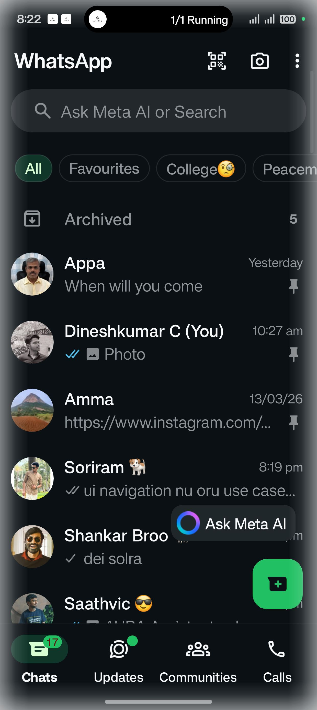

{
"text_length": 13,
"config": null
}[ "Open WhatsApp" ]

03-15 20:22:40.205 26218 27249 I UITree : Using window: com.whatsapp 03-15 20:22:40.206 26218 26218 D UITree : Window: pkg=com.android.systemui, type=3, layer=1 03-15 20:22:40.207 26218 26218 D UITree : Window: pkg=com.whatsapp, type=1, layer=0 03-15 20:22:40.208 26218 26218 D UITree : → Selected as target app window: com.whatsapp 03-15 20:22:40.208 26218 26218 I UITree : Using window: com.whatsapp 03-15 20:22:40.224 26218 27250 D UITree : UI tree validated: 71 elements, 100% valid bounds 03-15 20:22:40.228 26218 27250 I VoiceCaptureController: 📤 Sent UI tree response: request_id=518549c0, screen=1240x2772 03-15 20:22:40.234 26218 26218 D Screenshot: Ignoring image available - no capture requested 03-15 20:22:40.281 26218 28951 I VoiceCaptureController: 📸 Backend requested screenshot: request_id=518549c0, reason=Action: verify 03-15 20:22:40.283 26218 27217 D Screenshot: MediaProjection status: available=true (projection=true, resources=true, permData=true) 03-15 20:22:40.284 26218 27217 D Screenshot: Captured image immediately 03-15 20:22:40.287 26218 27217 D Screenshot: Buffer: 14192640 bytes, rowStride=5120, pixelStride=4 03-15 20:22:40.296 26218 26218 D Screenshot: Buffer: 14192640 bytes, rowStride=5120, pixelStride=4 03-15 20:22:40.343 26218 27217 I Screenshot: Compressed bitmap: 237703 bytes (232 KB) 03-15 20:22:40.345 26218 27217 I Screenshot: Screenshot captured: 316940 chars (~309 KB) 03-15 20:22:40.345 26218 27217 D UITree : Found 2 windows 03-15 20:22:40.347 26218 26218 I Screenshot: Compressed bitmap: 237706 bytes (232 KB) 03-15 20:22:40.349 26218 27217 D UITree : Window: pkg=com.android.systemui, type=3, layer=1 03-15 20:22:40.349 26218 26218 I Screenshot: Screenshot captured: 316944 chars (~309 KB) 03-15 20:22:40.349 26218 26218 D UITree : Found 2 windows 03-15 20:22:40.356 26218 27217 D UITree : Window: pkg=com.whatsapp, type=1, layer=0 03-15 20:22:40.356 26218 27217 D UITree : → Selected as target app window: com.whatsapp 03-15 20:22:40.356 26218 26218 D UITree : Window: pkg=com.android.systemui, type=3, layer=1 03-15 20:22:40.356 26218 27217 I UITree : Using window: com.whatsapp 03-15 20:22:40.357 26218 27217 I Screenshot: Screenshot captured: 316940 chars 03-15 20:22:40.360 26218 26218 D UITree : Window: pkg=com.whatsapp, type=1, layer=0 03-15 20:22:40.360 26218 26218 D UITree : → Selected as target app window: com.whatsapp 03-15 20:22:40.360 26218 26218 I UITree : Using window: com.whatsapp 03-15 20:22:40.368 26218 27217 I VoiceCaptureController: 📤 Sent screenshot response: request_id=518549c0, size=316940 bytes 03-15 20:22:40.368 26218 26218 D Screenshot: Ignoring image available - no capture requested
{
"input_type": "text",
"command": "Open WhatsApp"
}{
"status": "completed",
"transcript": "Open WhatsApp",
"spoken_response": "Got it, opening WhatsApp for you."
}--------- beginning of main
03-15 20:20:18.160 26218 27208 D HWUI : SkiaOpenGLPipeline::setSurface: this=0xb40000707bb89880, surface=NULL
03-15 20:20:34.812 26218 27257 D ColorModeChangeItem: preExecute mColorMode=0
03-15 20:20:34.825 26218 26218 I i.feature.debug: AssetManager2(0xb400007028420328) locale list changing from [] to [en-IN]
--------- beginning of system
03-15 20:20:34.825 26218 26218 D ResourcesManagerExtImpl: applyConfigurationToAppResourcesLocked app.getDisplayId() return callback.displayId:0
03-15 20:20:34.835 26218 26218 E OplusPredictiveBackController: NoSuchMethodException
03-15 20:20:34.835 26218 26218 E OplusPredictiveBackController: NoSuchMethodException
03-15 20:20:34.836 26218 26218 D OplusPredictiveBackController: should not HookOnBackInvokedCallbackEnabled for application com.aura.aura_ui.MainActivity@28cdd8c sdk: 36
03-15 20:20:34.836 26218 26218 D OplusPredictiveBackController: initPredictiveBackConfig for com.aura.aura_ui.MainActivity@28cdd8c initPredictiveBackConfig mShouldInterceptKeyEvent false
03-15 20:20:34.836 26218 26218 D OplusPredictiveBackController: should not HookOnBackInvokedCallbackEnabled for application com.aura.aura_ui.MainActivity@28cdd8c sdk: 36
03-15 20:20:34.836 26218 26218 D MainActivity: onCreate: Starting AURA UI
03-15 20:20:34.836 26218 26218 D MainActivity: Checking accessibility service status...
03-15 20:20:34.837 26218 26218 D MainActivity: Package name: com.aura.aura_ui.feature.debug
03-15 20:20:34.837 26218 26218 D MainActivity: Enabled services count: 2
03-15 20:20:34.837 26218 26218 D MainActivity: Found service: com.microsoft.appmanager/com.microsoft.mmx.screenmirroringsrc.accessibility.ScreenMirroringAccessibilityService
03-15 20:20:34.837 26218 26218 D MainActivity: Found service: com.aura.aura_ui.feature.debug/com.aura.aura_ui.accessibility.AuraAccessibilityService
03-15 20:20:34.837 26218 26218 I MainActivity: ✅ AURA Accessibility Service is enabled
03-15 20:20:34.838 26218 26218 I MainActivity: ✨ Visual feedback overlay service started
03-15 20:20:34.839 26218 26218 D MainActivity: Permissions - Audio: true, Internet: true, Overlay: true
03-15 20:20:34.839 26218 26218 I MainActivity: 🚀 Launching AURA as overlay
03-15 20:20:34.842 26218 26218 I MainActivity: 🎤 Wake word service started (was enabled)
03-15 20:20:34.844 26218 27217 I MainActivity: ✅ Using manual server configuration: http://100.78.51.4:8000
03-15 20:20:34.850 26218 27217 I Accessibility: Backend URL updated {url=http://100.78.51.4:8000}
03-15 20:20:34.851 26218 27217 I Accessibility: Backend URL updated {url=http://100.78.51.4:8000}
03-15 20:20:34.852 26218 27217 I Accessibility: All components updated with new backend URL {url=http://100.78.51.4:8000}
03-15 20:20:34.853 26218 26218 D ActivityClient: activity finished by caller: android.app.Activity.finish:7639 android.app.Activity.finish:7656 com.aura.aura_ui.MainActivity.launchAsOverlay:623 com.aura.aura_ui.MainActivity.onCreate:470 android.app.Activity.performCreate:9391 android.app.Activity.performCreate:9363 android.app.Instrumentation.callActivityOnCreate:1541 android.app.ActivityThread.performLaunchActivity:4604 android.app.ActivityThread.handleLaunchActivity:4827 android.app.servertransaction.LaunchActivityItem.execute:242
03-15 20:20:34.862 26218 26218 D ActivityThread: ComponentInfo{com.aura.aura_ui.feature.debug/com.aura.aura_ui.MainActivity} checkFinished=true 1
03-15 20:20:34.867 26218 26218 I AuraOverlayService: ✨ AuraOverlayService created
03-15 20:20:34.896 26218 26218 D AuraOverlayService: 📱 Android 36 detected - setting screen capture exclusion
03-15 20:20:34.896 26218 26218 D AuraOverlayService: 🎭 Overlay privateFlags: 0 -> 128 (screen capture exclusion set)
03-15 20:20:34.899 26218 26218 D WindowManager: Add to mViews: androidx.compose.ui.platform.ComposeView{ecb3c31 V.E...... ......I. 0,0-0,0 alpha=1.0 viewInfo = },pkg= null
03-15 20:20:34.900 26218 27208 D skia : setRusSupported enable 0
03-15 20:20:34.916 26218 26218 D ViewRootImplExtImpl: onDisplayChanged -1 for VRI android.view.ViewRootImpl@d6b284
03-15 20:20:34.924 26218 26218 D AuraOverlayService: Wake lock acquired
03-15 20:20:34.934 26218 26218 I AuraOverlayService: ✅ Overlay shown successfully
03-15 20:20:34.937 26218 26218 D WakeWordService: onStartCommand: action=com.aura.aura_ui.START_WAKE_WORD, isEnabled=true
03-15 20:20:34.937 26218 26218 D WakeWordService: Wake word already enabled - ensuring detection is running
03-15 20:20:34.937 26218 26218 D WakeWordService: Ensuring wake word running: isListening=true, mode=PASSIVE, detector=PorcupineWakeWordDetector
03-15 20:20:34.937 26218 26218 I WakeWordService: In PASSIVE mode - starting/ensuring wake word detection...
03-15 20:20:34.937 26218 26218 D WakeWordService: Wake word detection already running
03-15 20:20:34.942 26218 26218 D ActivityThread: ComponentInfo{com.aura.aura_ui.feature.debug/com.aura.aura_ui.MainActivity} checkFinished=true 1
03-15 20:20:34.948 26218 26218 E OplusBracketLog: [OplusViewMirrorManager] updateHostViewRootIfNeeded, not support android.view.ViewRootImpl@d6b284
03-15 20:20:34.970 26218 26218 D Vibrator: SystemVibrator Created
03-15 20:20:35.064 26218 26218 D BufferQueueConsumer: [](id:666a00000001,api:0,p:-1,c:26218) connect: controlledByApp=false
03-15 20:20:35.065 26218 26218 D BufferQueueConsumer: [VRI[]#1(BLAST Consumer)1](id:666a00000001,api:0,p:-1,c:26218) setMaxAcquiredBufferCount: 2
03-15 20:20:35.066 26218 27208 D HWUI : createSurface new attribs array
03-15 20:20:35.067 26218 27208 D libEGL : this is from skia gles
03-15 20:20:35.067 26218 27208 D BufferQueueProducer: [VRI[]#1(BLAST Consumer)1](id:666a00000001,api:1,p:26218,c:26218) connect: api=1 producerControlledByApp=true
03-15 20:20:35.080 26218 26218 I SurfaceControl: setExtendedRangeBrightness sc=Surface(name=)/@0xdba0572,currentBufferRatio=1.0,desiredRatio=1.0
03-15 20:20:35.094 26218 27208 D BLASTBufferQueue: [VRI[]#1](f:0,a:1) acquireNextBufferLocked size=1240x2772 mFrameNumber=1 applyTransaction=true mTimestamp=37976359273793(auto) mPendingTransactions.size=0 graphicBufferId=112605452566535 transform=0
03-15 20:20:35.094 26218 27208 D VRI[] : Received frameCommittedCallback lastAttemptedDrawFrameNum=1 didProduceBuffer=true syncBuffer=false
03-15 20:20:35.095 26218 26218 D VRI[] : draw finished. seqId=0
03-15 20:20:35.096 26218 26218 I AuraOverlayService: 🌟 Gemini Live mode — voice fully replaced by Gemini Live
03-15 20:20:35.110 26218 26218 I i.feature.debug: AssetManager2(0xb400007028512128) locale list changing from [] to [en-IN]
03-15 20:20:35.110 26218 26218 I TextToSpeech: Sucessfully bound to com.google.android.tts
03-15 20:20:35.111 26218 26218 D VRI[] : onFocusEvent true
03-15 20:20:35.147 26218 27217 I MainActivity: Device registered with backend accessibility service
03-15 20:20:35.148 26218 26218 I MainActivity: ✅ Backend accessibility service connected
03-15 20:20:35.148 26218 26218 D MainActivity: Checking accessibility service status...
03-15 20:20:35.148 26218 26218 D MainActivity: Package name: com.aura.aura_ui.feature.debug
03-15 20:20:35.148 26218 26218 D MainActivity: Enabled services count: 2
03-15 20:20:35.148 26218 26218 D MainActivity: Found service: com.microsoft.appmanager/com.microsoft.mmx.screenmirroringsrc.accessibility.ScreenMirroringAccessibilityService
03-15 20:20:35.148 26218 26218 D MainActivity: Found service: com.aura.aura_ui.feature.debug/com.aura.aura_ui.accessibility.AuraAccessibilityService
03-15 20:20:35.148 26218 26218 I MainActivity: ✅ AURA Accessibility Service is enabled
03-15 20:20:35.149 26218 26218 I MainActivity: ✅ Using Commander-based on-demand UI capture
03-15 20:20:35.592 26218 26218 D ActivityThread: ComponentInfo{com.aura.aura_ui.feature.debug/com.aura.aura_ui.MainActivity} checkFinished=true 1
03-15 20:20:35.593 26218 26218 D MainActivity: Stopping voice listening
03-15 20:20:35.593 26218 26218 D MainActivity: Audio recording stopped successfully
03-15 20:20:35.593 26218 26218 W MainActivity: No audio data collected
03-15 20:20:35.593 26218 26218 D MainActivity: onDestroy: Activity destroyed
03-15 20:20:36.128 26218 27224 D OplusScrollToTopManager: ,This androidx.compose.ui.platform.ComposeView{ecb3c31 V.E...... ........ 0,0-1240,2772 aid=3 alpha=1.0 viewInfo = } change focus to true
03-15 20:20:36.379 26218 28436 I VoiceCaptureController: ✅ WebSocket connected successfully
03-15 20:20:36.380 26218 26218 D ConversationViewModel: Starting conversation session: 4f010219-b9e9-443a-8c70-4d6d4a1aac86
03-15 20:20:36.380 26218 26218 D ConversationViewModel: Server connection changed: true
03-15 20:20:36.380 26218 26218 D Screenshot: MediaProjection status: available=false (projection=false, resources=false, permData=false)
03-15 20:20:36.381 26218 26218 I VoiceCaptureController: 📱 Sent device_info: 1240x2772, screen_capture=false
03-15 20:20:36.381 26218 26218 I AuraOverlayService: ✅ Gesture pipe /ws/conversation connected
03-15 20:20:36.384 26218 27217 I GeminiLiveCtrl: Connecting to Gemini Live: ws://100.78.51.4:8000/ws/live?session_id=715b823c-41d1-43c4-a977-1ef264d21bcb
03-15 20:20:36.386 26218 28436 D VoiceCaptureController: Conversation connected
03-15 20:20:36.428 26218 28461 I GeminiLiveCtrl: ✅ Gemini Live WebSocket connected
03-15 20:20:36.429 26218 26218 I AuraOverlayService: ✅ GeminiLiveController connected — Gemini Live is the voice pipeline
03-15 20:20:36.439 26218 28436 W VoiceCaptureController: ⚠️ Unknown message type: device_info_ack
03-15 20:20:36.487 26218 28437 I TextToSpeech: Connected to TTS engine
03-15 20:20:36.753 26218 27312 I TextToSpeech: Setting up the connection to TTS engine...
03-15 20:20:36.773 26218 26218 I AuraTTSManager: TTS ready — 473 voices available
03-15 20:20:41.613 26218 26218 E IJankManager: slideSceneEnd unknown scene 1000 mScene:-1
03-15 20:20:41.708 26218 26218 D ViewRootImplExtImpl: the up motion event handled by client, just return
03-15 20:20:41.716 26218 28437 D ColorModeChangeItem: preExecute mColorMode=0
03-15 20:20:41.722 26218 26218 D ResourcesManagerExtImpl: applyConfigurationToAppResourcesLocked app.getDisplayId() return callback.displayId:0
03-15 20:20:41.724 26218 26218 E OplusPredictiveBackController: NoSuchMethodException
03-15 20:20:41.725 26218 26218 E OplusPredictiveBackController: NoSuchMethodException
03-15 20:20:41.725 26218 26218 D OplusPredictiveBackController: should not HookOnBackInvokedCallbackEnabled for application com.aura.aura_ui.MainActivity@94f7da7 sdk: 36
03-15 20:20:41.725 26218 26218 D OplusPredictiveBackController: initPredictiveBackConfig for com.aura.aura_ui.MainActivity@94f7da7 initPredictiveBackConfig mShouldInterceptKeyEvent false
03-15 20:20:41.725 26218 26218 D OplusPredictiveBackController: should not HookOnBackInvokedCallbackEnabled for application com.aura.aura_ui.MainActivity@94f7da7 sdk: 36
03-15 20:20:41.725 26218 26218 D MainActivity: onCreate: Starting AURA UI
03-15 20:20:41.726 26218 26218 D MainActivity: Checking accessibility service status...
03-15 20:20:41.726 26218 26218 D MainActivity: Package name: com.aura.aura_ui.feature.debug
03-15 20:20:41.726 26218 26218 D MainActivity: Enabled services count: 2
03-15 20:20:41.726 26218 26218 D MainActivity: Found service: com.microsoft.appmanager/com.microsoft.mmx.screenmirroringsrc.accessibility.ScreenMirroringAccessibilityService
03-15 20:20:41.726 26218 26218 D MainActivity: Found service: com.aura.aura_ui.feature.debug/com.aura.aura_ui.accessibility.AuraAccessibilityService
03-15 20:20:41.726 26218 26218 I MainActivity: ✅ AURA Accessibility Service is enabled
03-15 20:20:41.727 26218 26218 I MainActivity: ✨ Visual feedback overlay service started
03-15 20:20:41.727 26218 26218 D MainActivity: Opening settings screen from overlay
03-15 20:20:41.730 26218 26218 I AuraOverlayService: 🔽 Overlay minimized (no execution notification)
03-15 20:20:41.738 26218 26218 D ActivityThread: ComponentInfo{com.aura.aura_ui.feature.debug/com.aura.aura_ui.MainActivity} checkFinished=false 2
03-15 20:20:41.738 26218 26218 D ResourcesManagerExtImpl: applyConfigurationToAppResourcesLocked app.getDisplayId() return callback.displayId:0
03-15 20:20:41.740 26218 26218 D WindowManager: Add to mViews: com.android.internal.policy.DecorView{3026a31 I.E...... R.....I. 0,0-0,0 alpha=1.0 viewInfo = }[MainActivity],pkg= com.aura.aura_ui.feature.debug
03-15 20:20:41.740 26218 27208 D skia : setRusSupported enable 0
03-15 20:20:41.744 26218 26218 D ViewRootImplExtImpl: onDisplayChanged -1 for VRI android.view.ViewRootImpl@7a23884
03-15 20:20:41.746 26218 26218 D ResourcesManagerExtImpl: applyConfigurationToAppResourcesLocked app.getDisplayId() return callback.displayId:0
03-15 20:20:41.748 26218 26218 E OplusBracketLog: [OplusViewMirrorManager] updateHostViewRootIfNeeded, not support android.view.ViewRootImpl@7a23884
03-15 20:20:41.755 26218 26218 D Vibrator: SystemVibrator Created
03-15 20:20:41.795 26218 26218 D Screenshot: MediaProjection status: available=false (projection=false, resources=false, permData=false)
03-15 20:20:41.819 26218 26218 D Screenshot: MediaProjection status: available=false (projection=false, resources=false, permData=false)
03-15 20:20:41.820 26218 26218 D Screenshot: MediaProjection status: available=false (projection=false, resources=false, permData=false)
03-15 20:20:41.820 26218 26218 D OplusPredictiveBackController: should not HookOnBackInvokedCallbackEnabled for application com.aura.aura_ui.MainActivity@94f7da7 sdk: 36
03-15 20:20:41.848 26218 26218 D ViewRootImplExtImpl: wrapConfigInfoIntoFlags rotation=0, smallestScreenWidthDp=0, residentWS=false, scenario=0, bounds=Rect(0, 0 - 1240, 2772), relayoutAsync=false, flags=0, newFlags=1453326336, title=com.aura.aura_ui.feature.debug/com.aura.aura_ui.MainActivity
03-15 20:20:41.851 26218 26218 D VRI[MainActivity]: relayoutWindow result, sizeChanged:true, surfaceControlChanged:true, transformHintChanged:false, mSurfaceSize:Point(1240, 2772), mLastSurfaceSize:Point(0, 0), mWidth:-1, mHeight:-1, requestedWidth:1240, requestedHeight:2772, transformHint:0, installOrientation:0, displayRotation:0, isSurfaceValid:true, attr.flag:-2122252032, tmpFrames:ClientWindowFrames{frame=[0,0][1240,2772] display=[0,0][1240,2772] parentFrame=[0,0][0,0]}, relayoutAsync:false, mSyncSeqId:0
03-15 20:20:41.852 26218 26218 W VRI[MainActivity]: updateBlastSurfaceIfNeeded, surfaceSize:Point(1240, 2772), lastSurfaceSize:Point(0, 0), format:-2, blastBufferQueue:null
03-15 20:20:41.852 26218 26218 D BufferQueueConsumer: [](id:666a00000002,api:0,p:-1,c:26218) connect: controlledByApp=false
03-15 20:20:41.852 26218 26218 D BufferQueueConsumer: [VRI[MainActivity]#2(BLAST Consumer)2](id:666a00000002,api:0,p:-1,c:26218) setMaxAcquiredBufferCount: 2
03-15 20:20:41.853 26218 27208 D HWUI : createSurface new attribs array
03-15 20:20:41.853 26218 27208 D libEGL : this is from skia gles
03-15 20:20:41.853 26218 27208 D BufferQueueProducer: [VRI[MainActivity]#2(BLAST Consumer)2](id:666a00000002,api:1,p:26218,c:26218) connect: api=1 producerControlledByApp=true
03-15 20:20:41.869 26218 26218 I SurfaceControl: setExtendedRangeBrightness sc=Surface(name=com.aura.aura_ui.feature.debug/com.aura.aura_ui.MainActivity)/@0x42b3900,currentBufferRatio=1.0,desiredRatio=1.0
03-15 20:20:41.886 26218 27208 D BLASTBufferQueue: [VRI[MainActivity]#2](f:0,a:1) acquireNextBufferLocked size=1240x2772 mFrameNumber=1 applyTransaction=true mTimestamp=37983151725248(auto) mPendingTransactions.size=0 graphicBufferId=112605452566539 transform=0
03-15 20:20:41.886 26218 27208 D VRI[MainActivity]: Received frameCommittedCallback lastAttemptedDrawFrameNum=1 didProduceBuffer=true syncBuffer=false
03-15 20:20:41.886 26218 26218 D VRI[MainActivity]: draw finished. seqId=0
03-15 20:20:41.910 26218 26218 W VRI[MainActivity]: handleResized, msg:, frameChanged:false, configChanged:false, displayChanged:false, attachedFrameChanged:false, compatScaleChanged:false, pendingDragResizing=false
03-15 20:20:41.914 26218 27208 D VRI[MainActivity]: Received frameCommittedCallback lastAttemptedDrawFrameNum=3 didProduceBuffer=true syncBuffer=false
03-15 20:20:41.915 26218 26218 D VRI[MainActivity]: draw finished. seqId=0
03-15 20:20:42.024 26218 26218 D HWUI : RenderProxy::destroy: this=0xb40000707bb39300, mContext=0xb400007028794340
03-15 20:20:42.024 26218 27208 D HWUI : SkiaOpenGLPipeline::setSurface: this=0xb40000707bb89880, surface=NULL
03-15 20:20:42.025 26218 27208 D BufferQueueProducer: [VRI[]#1(BLAST Consumer)1](id:666a00000001,api:1,p:26218,c:26218) disconnect: api 1
03-15 20:20:42.025 26218 27208 D HWUI : endAllActiveAnimators on 0xb4000070287b3200 (UnprojectedRipple) with handle 0xb40000702855aa60
03-15 20:20:42.038 26218 27251 D BLASTBufferQueue: [VRI[]#1](f:0,a:1) destructor()
03-15 20:20:42.038 26218 27251 D BufferQueueConsumer: [VRI[]#1(BLAST Consumer)1](id:666a00000001,api:0,p:-1,c:26218) disconnect
03-15 20:20:42.040 26218 26218 D VRI[] : onFocusEvent false
03-15 20:20:42.052 26218 26218 D VRI[MainActivity]: onFocusEvent true
03-15 20:20:42.056 26218 26218 D InsetsController: hide(ime(), fromIme=false)
03-15 20:20:42.056 26218 26218 I ImeTracker: com.aura.aura_ui.feature.debug:3bb710a7: onCancelled at PHASE_CLIENT_ALREADY_HIDDEN
03-15 20:20:42.392 26218 26218 E IJankManager: slideSceneEnd unknown scene 1000 mScene:-1
03-15 20:20:42.393 26218 26218 D ViewExtract: [OplusViewExtractManager] OplusViewExtractManager init com.aura.aura_ui.feature.debug
03-15 20:20:42.507 26218 26218 D ViewRootImplExtImpl: the up motion event handled by client, just return
03-15 20:20:43.043 26218 27224 D OplusScrollToTopManager: ,This androidx.compose.ui.platform.ComposeView{ecb3c31 G.E...... ......ID 0,0-1240,2772 aid=3 alpha=1.0 viewInfo = } change focus to false
03-15 20:20:43.054 26218 27224 D OplusScrollToTopManager: com.aura.aura_ui.feature.debug/com.aura.aura_ui.MainActivity,This com.android.internal.policy.DecorView{3026a31 V.E...... R....... 0,0-1240,2772 aid=4 alpha=1.0 viewInfo = }[MainActivity] change focus to true
03-15 20:20:43.230 26218 26218 D ViewRootImplExtImpl: the up motion event handled by client, just return
03-15 20:20:43.607 26218 26218 I VelocityTracker: LSQ2 speed rezero
03-15 20:20:43.607 26218 26218 I VelocityTracker: LSQ2 speed rezero
03-15 20:20:43.608 26218 26218 I VelocityTracker: LSQ2 speed rezero
03-15 20:20:43.608 26218 26218 I VelocityTracker: LSQ2 speed rezero
03-15 20:20:43.608 26218 26218 D ViewRootImplExtImpl: the up motion event handled by client, just return
03-15 20:20:43.814 26218 26218 E IJankManager: slideSceneEnd unknown scene 1000 mScene:-1
03-15 20:20:43.868 26218 26218 D MainActivity: 🔍 Screen capture request initiated
03-15 20:20:43.869 26218 26218 D MainActivity: Checking accessibility service status...
03-15 20:20:43.869 26218 26218 D MainActivity: Package name: com.aura.aura_ui.feature.debug
03-15 20:20:43.869 26218 26218 D MainActivity: Enabled services count: 2
03-15 20:20:43.869 26218 26218 D MainActivity: Found service: com.microsoft.appmanager/com.microsoft.mmx.screenmirroringsrc.accessibility.ScreenMirroringAccessibilityService
03-15 20:20:43.869 26218 26218 D MainActivity: Found service: com.aura.aura_ui.feature.debug/com.aura.aura_ui.accessibility.AuraAccessibilityService
03-15 20:20:43.869 26218 26218 I MainActivity: ✅ AURA Accessibility Service is enabled
03-15 20:20:43.869 26218 26218 D MainActivity: Accessibility service status: true
03-15 20:20:43.869 26218 26218 D Screenshot: MediaProjection status: available=false (projection=false, resources=false, permData=false)
03-15 20:20:43.871 26218 26218 D MainActivity: 📸 Launching screen capture permission dialog...
03-15 20:20:43.894 26218 26218 D ViewRootImplExtImpl: the up motion event handled by client, just return
03-15 20:20:43.924 26218 26218 D VRI[MainActivity]: onFocusEvent false
03-15 20:20:44.006 26218 26218 D Accessibility: Window changed: com.android.systemui, isAuraAppActive: false
03-15 20:20:44.007 26218 26218 D Accessibility: Window changed: com.android.systemui, isAuraAppActive: false
03-15 20:20:44.516 26218 26218 D Accessibility: Window changed: com.android.systemui, isAuraAppActive: false
03-15 20:20:44.572 26218 26218 D Accessibility: Window changed: com.android.systemui, isAuraAppActive: false
03-15 20:20:44.579 26218 26218 D Accessibility: Window changed: com.android.systemui, isAuraAppActive: false
03-15 20:20:44.862 26218 26218 D Accessibility: Window changed: com.android.systemui, isAuraAppActive: false
03-15 20:20:44.927 26218 27224 D OplusScrollToTopManager: com.aura.aura_ui.feature.debug/com.aura.aura_ui.MainActivity,This com.android.internal.policy.DecorView{3026a31 V.E...... R....... 0,0-1240,2772 aid=4 alpha=1.0 viewInfo = }[MainActivity] change focus to false
03-15 20:20:45.252 26218 28437 D ColorModeChangeItem: preExecute mColorMode=0
03-15 20:20:45.254 26218 26218 I Screenshot: Initializing MediaProjection with resultCode=-1
03-15 20:20:45.258 26218 26218 I Screenshot: SUCCESS: MediaProjection initialized successfully!
03-15 20:20:45.258 26218 26218 I Screenshot: Screen dimensions: 1240x2772
03-15 20:20:45.258 26218 26218 D BufferQueueConsumer: [](id:666a00000003,api:0,p:-1,c:26218) connect: controlledByApp=true
03-15 20:20:45.258 26218 26218 D BufferQueueConsumer: [unnamed-26218-3](id:666a00000003,api:0,p:-1,c:26218) setMaxAcquiredBufferCount: 2
03-15 20:20:45.258 26218 26218 I Screenshot: ImageReader created: 1240x2772
03-15 20:20:45.289 26218 26218 I Screenshot: SUCCESS: Capture resources ready: 1240x2772
03-15 20:20:45.289 26218 26218 D MainActivity: ✅ Screen capture permission granted and initialized
03-15 20:20:45.290 26218 26218 D Screenshot: MediaProjection status: available=true (projection=true, resources=true, permData=true)
03-15 20:20:45.296 26218 26218 D ActivityThread: ComponentInfo{com.aura.aura_ui.feature.debug/com.aura.aura_ui.MainActivity} checkFinished=false 4
03-15 20:20:45.297 26218 26218 D ResourcesManagerExtImpl: applyConfigurationToAppResourcesLocked app.getDisplayId() return callback.displayId:0
03-15 20:20:45.297 26218 26218 D Screenshot: MediaProjection status: available=true (projection=true, resources=true, permData=true)
03-15 20:20:45.300 26218 26218 D Screenshot: MediaProjection status: available=true (projection=true, resources=true, permData=true)
03-15 20:20:45.301 26218 26218 D VRI[MainActivity]: onFocusEvent true
03-15 20:20:45.311 26218 26227 D BufferQueueProducer: [ImageReader-1240x2772f1m2-26218-0](id:666a00000003,api:1,p:2093,c:26218) connect: api=1 producerControlledByApp=false
03-15 20:20:45.343 26218 26218 D ViewRootImplExtImpl: onDisplayChanged 12 for VRI android.view.ViewRootImpl@c0e2c3d
03-15 20:20:45.343 26218 26218 D ViewRootImplExtImpl: onDisplayChanged 12 for VRI android.view.ViewRootImpl@ad9497e
03-15 20:20:45.343 26218 26218 D ViewRootImplExtImpl: onDisplayChanged 12 for VRI android.view.ViewRootImpl@d6b284
03-15 20:20:45.343 26218 26218 D ViewRootImplExtImpl: onDisplayChanged 12 for VRI android.view.ViewRootImpl@7a23884
03-15 20:20:45.346 26218 26218 D Screenshot: Ignoring image available - no capture requested
03-15 20:20:45.346 26218 26218 D InsetsController: hide(ime(), fromIme=false)
03-15 20:20:45.346 26218 26218 I ImeTracker: com.aura.aura_ui.feature.debug:b29d43a: onCancelled at PHASE_CLIENT_ALREADY_HIDDEN
03-15 20:20:45.409 26218 27217 I Screenshot: Sent screen capture permission result {granted=true}
03-15 20:20:46.118 26218 26218 E IJankManager: slideSceneEnd unknown scene 1000 mScene:-1
03-15 20:20:46.131 26218 26218 I AuraOverlayService: 🔼 Overlay restored after automation
03-15 20:20:46.131 26218 26218 I MainActivity: 🚀 Launching AURA as overlay
03-15 20:20:46.135 26218 26218 I MainActivity: 🎤 Wake word service started (was enabled)
03-15 20:20:46.136 26218 27217 I MainActivity: ✅ Using manual server configuration: http://100.78.51.4:8000
03-15 20:20:46.137 26218 27217 I Accessibility: Backend URL updated {url=http://100.78.51.4:8000}
03-15 20:20:46.137 26218 27217 I Accessibility: Backend URL updated {url=http://100.78.51.4:8000}
03-15 20:20:46.137 26218 27217 I Accessibility: All components updated with new backend URL {url=http://100.78.51.4:8000}
03-15 20:20:46.151 26218 26218 D ActivityClient: activity finished by caller: android.app.Activity.finish:7639 android.app.Activity.finish:7656 com.aura.aura_ui.MainActivity.launchAsOverlay:623 com.aura.aura_ui.MainActivity.SettingsNavigation$lambda$3$0:752 com.aura.aura_ui.MainActivity.$r8$lambda$sY2tyyw8XUwZZgrqVRvX5RPwVPk:0 com.aura.aura_ui.MainActivity$$ExternalSyntheticLambda37.invoke:0 androidx.compose.foundation.ClickableNode$clickPointerInput$3.invoke-k-4lQ0M:699 androidx.compose.foundation.ClickableNode$clickPointerInput$3.invoke:693 androidx.compose.foundation.gestures.TapGestureDetectorKt$detectTapAndPress$2$1.invokeSuspend:266 kotlin.coroutines.jvm.internal.BaseContinuationImpl.resumeWith:34
03-15 20:20:46.154 26218 26218 D ViewRootImplExtImpl: the up motion event handled by client, just return
03-15 20:20:46.179 26218 26218 D BufferQueueConsumer: [](id:666a00000004,api:0,p:-1,c:26218) connect: controlledByApp=false
03-15 20:20:46.180 26218 26218 D BufferQueueConsumer: [VRI[]#3(BLAST Consumer)3](id:666a00000004,api:0,p:-1,c:26218) setMaxAcquiredBufferCount: 2
03-15 20:20:46.181 26218 27208 D HWUI : createSurface new attribs array
03-15 20:20:46.181 26218 27208 D libEGL : this is from skia gles
03-15 20:20:46.181 26218 27208 D BufferQueueProducer: [VRI[]#3(BLAST Consumer)3](id:666a00000004,api:1,p:26218,c:26218) connect: api=1 producerControlledByApp=true
03-15 20:20:46.182 26218 26218 I SurfaceControl: setExtendedRangeBrightness sc=Surface(name=)/@0xdba0572,currentBufferRatio=1.0,desiredRatio=1.0
03-15 20:20:46.193 26218 27208 D BLASTBufferQueue: [VRI[]#3](f:0,a:1) acquireNextBufferLocked size=1240x2772 mFrameNumber=1 applyTransaction=true mTimestamp=37987458261497(auto) mPendingTransactions.size=0 graphicBufferId=112605452566542 transform=0
03-15 20:20:46.193 26218 27208 D VRI[] : Received frameCommittedCallback lastAttemptedDrawFrameNum=1 didProduceBuffer=true syncBuffer=false
03-15 20:20:46.194 26218 26218 D VRI[] : draw finished. seqId=0
03-15 20:20:46.197 26218 26218 D VRI[MainActivity]: onFocusEvent false
03-15 20:20:46.202 26218 26218 D AuraOverlayService: Overlay already visible
03-15 20:20:46.203 26218 26218 D WakeWordService: onStartCommand: action=com.aura.aura_ui.START_WAKE_WORD, isEnabled=true
03-15 20:20:46.203 26218 26218 D WakeWordService: Wake word already enabled - ensuring detection is running
03-15 20:20:46.203 26218 26218 D WakeWordService: Ensuring wake word running: isListening=true, mode=PASSIVE, detector=PorcupineWakeWordDetector
03-15 20:20:46.203 26218 26218 I WakeWordService: In PASSIVE mode - starting/ensuring wake word detection...
03-15 20:20:46.203 26218 26218 D WakeWordService: Wake word detection already running
03-15 20:20:46.214 26218 26218 D VRI[] : onFocusEvent true
03-15 20:20:46.296 26218 27217 I MainActivity: Device registered with backend accessibility service
03-15 20:20:46.326 26218 26218 I MainActivity: ✅ Backend accessibility service connected
03-15 20:20:46.327 26218 26218 D MainActivity: Checking accessibility service status...
03-15 20:20:46.327 26218 26218 D MainActivity: Package name: com.aura.aura_ui.feature.debug
03-15 20:20:46.327 26218 26218 D MainActivity: Enabled services count: 2
03-15 20:20:46.327 26218 26218 D MainActivity: Found service: com.microsoft.appmanager/com.microsoft.mmx.screenmirroringsrc.accessibility.ScreenMirroringAccessibilityService
03-15 20:20:46.327 26218 26218 D MainActivity: Found service: com.aura.aura_ui.feature.debug/com.aura.aura_ui.accessibility.AuraAccessibilityService
03-15 20:20:46.327 26218 26218 I MainActivity: ✅ AURA Accessibility Service is enabled
03-15 20:20:46.327 26218 26218 I MainActivity: ✅ Using Commander-based on-demand UI capture
03-15 20:20:46.443 26218 28436 W VoiceCaptureController: ⚠️ Unknown message type: heartbeat
03-15 20:20:46.890 26218 27254 D VRI[MainActivity]: dispatchAppVisibility visible:false mUpcomingWindowFocus:false
03-15 20:20:46.891 26218 26218 D VRI[MainActivity]: visibilityChanged oldVisibility=true newVisibility=false
03-15 20:20:46.897 26218 26218 D HWUI : RenderProxy::destroy: this=0xb4000070ab479f00, mContext=0xb4000070ab48c4c0
03-15 20:20:46.897 26218 27208 D HWUI : SkiaOpenGLPipeline::setSurface: this=0xb400007028545b40, surface=NULL
03-15 20:20:46.897 26218 27208 D BufferQueueProducer: [VRI[MainActivity]#2(BLAST Consumer)2](id:666a00000002,api:1,p:26218,c:26218) disconnect: api 1
03-15 20:20:46.899 26218 26218 D ViewRootImplExtImpl: wrapConfigInfoIntoFlags rotation=0, smallestScreenWidthDp=354, residentWS=false, scenario=0, bounds=Rect(0, 0 - 1240, 2772), relayoutAsync=false, flags=0, newFlags=1453337664, title=com.aura.aura_ui.feature.debug/com.aura.aura_ui.MainActivity
03-15 20:20:46.905 26218 26218 D VRI[MainActivity]: relayoutWindow result, sizeChanged:false, surfaceControlChanged:true, transformHintChanged:false, mSurfaceSize:Point(1240, 2772), mLastSurfaceSize:Point(1240, 2772), mWidth:1240, mHeight:2772, requestedWidth:1240, requestedHeight:2772, transformHint:0, installOrientation:0, displayRotation:0, isSurfaceValid:false, attr.flag:-2122252032, tmpFrames:ClientWindowFrames{frame=[0,0][1240,2772] display=[0,0][1240,2772] parentFrame=[0,0][0,0]}, relayoutAsync:false, mSyncSeqId:0
03-15 20:20:46.906 26218 26218 D BLASTBufferQueue: [VRI[MainActivity]#2](f:0,a:1) destructor()
03-15 20:20:46.906 26218 26218 D BufferQueueConsumer: [VRI[MainActivity]#2(BLAST Consumer)2](id:666a00000002,api:0,p:-1,c:26218) disconnect
03-15 20:20:46.908 26218 26218 D VRI[MainActivity]: setWindowStopped stopped:true
03-15 20:20:46.935 26218 26218 W WindowOnBackDispatcher: sendCancelIfRunning: isInProgress=false callback=android.app.Activity$2@762786d
03-15 20:20:46.935 26218 26218 D MainActivity: Stopping voice listening
03-15 20:20:46.935 26218 26218 D MainActivity: Audio recording stopped successfully
03-15 20:20:46.935 26218 26218 W MainActivity: No audio data collected
03-15 20:20:46.935 26218 26218 D MainActivity: onDestroy: Activity destroyed
03-15 20:20:46.935 26218 26218 D OplusScrollToTopManager: com.aura.aura_ui.feature.debug/com.aura.aura_ui.MainActivity,window dying
03-15 20:20:46.935 26218 26218 D OplusScrollToTopManager: com.aura.aura_ui.feature.debug/com.aura.aura_ui.MainActivity,unregisterSystemUIBroadcastReceiver
03-15 20:20:46.935 26218 26218 D OplusScrollToTopManager: com.aura.aura_ui.feature.debug/com.aura.aura_ui.MainActivity, unregisterSystemUIBroadcastReceiver failed java.lang.IllegalArgumentException: Receiver not registered: android.view.OplusScrollToTopManager$2@ab1bd3e
03-15 20:20:46.938 26218 26218 D HWUI : RenderProxy::destroy: this=0xb4000070ab479f00, mContext=0xb4000070ab48c4c0
03-15 20:20:46.938 26218 27208 D HWUI : SkiaOpenGLPipeline::setSurface: this=0xb400007028545b40, surface=NULL
03-15 20:20:46.938 26218 26218 D ViewRootImpl: Skipping stats log for color mode
03-15 20:20:47.180 26218 26218 E IJankManager: slideSceneEnd unknown scene 1000 mScene:-1
03-15 20:20:47.223 26218 27224 D OplusScrollToTopManager: ,This androidx.compose.ui.platform.ComposeView{ecb3c31 V.E...... ........ 0,0-1240,2772 aid=3 alpha=1.0 viewInfo = } change focus to true
03-15 20:20:47.283 26218 26218 D AudioManager: setMode mode=3 from com.aura.aura_ui.feature.debug
03-15 20:20:47.284 26218 26218 D AudioRecord: getMinFrameCount 640
03-15 20:20:47.285 26218 26218 D AudioRecordExtImpl: AudioRecordExtImpl init
03-15 20:20:47.285 26218 26218 D AudioRecordExtImpl: audiorecordTest
03-15 20:20:47.285 26218 26218 D AudioRecord: set(): inputSource 7, sampleRate 16000, format 0x1, channelMask 0x10, frameCount 1600, notificationFrames 0, sessionId 0, transferType 0, flags 0, attributionSource AttributionSourceState{pid: 26218, uid: 10551, deviceId: 0, packageName: com.aura.aura_ui.feature.debug, attributionTag: (null), token: binder:0xb400007085153a60, renouncedPermissions: [], next: []}uid -1, pid -1
03-15 20:20:47.286 26218 26218 D AudioRecord: set(): mSessionId 0
03-15 20:20:47.286 26218 26218 D AudioRecord: set(): 0xb4000070ab59cb00, Create AudioRecordThread, tid = 28573
03-15 20:20:47.286 26218 26218 D AudioRecordExtImpl: doSchedBoost, set audioapp task boost, pid=26218, tid=26218, enable=1, ret=0
03-15 20:20:47.360 26218 26218 I AudioRecord: openRecord_l: 0xb4000070ab59cb00, mCblk = 0x71724bc000
03-15 20:20:47.360 26218 26218 D AudioRecordExtImpl: doSchedBoost, set audioapp task boost, pid=26218, tid=26218, enable=0, ret=0
03-15 20:20:47.362 26218 26218 D android.media.AudioRecord: thirdPartyPlaybackCaptureSupported = false
03-15 20:20:47.362 26218 26218 I AudioEffect: queryNumberEffects(): *numEffects = 24, ret = 0
03-15 20:20:47.371 26218 26218 I AudioEffect: set 0xb4000070853d3200 timeLow 7b491460
03-15 20:20:47.372 26218 26218 D AudioSystem: onNewService: media.audio_policy service obtained 0xb4000070ab435000
03-15 20:20:47.372 26218 26218 D AudioSystem: getService: checking for service media.audio_policy: 0xb4000070ab435000
03-15 20:20:47.375 26218 26218 I AudioEffect: set() 0xb4000070853d3200 OK effect: Acoustic Echo Canceler id: 1075 status 0 enabled 1 pid 26218
03-15 20:20:47.376 26218 26218 I GeminiLiveCtrl: ✅ AcousticEchoCanceler enabled — barge-in active (session 9473)
03-15 20:20:47.377 26218 26218 D AudioRecord: start(1345): sync event 0 trigger session 0
03-15 20:20:47.395 26218 26218 I AudioRecord: start(1345): return status 0
03-15 20:20:47.395 26218 26218 D ConversationViewModel: Phase transition: IDLE -> LISTENING
03-15 20:20:47.395 26218 26218 I GeminiLiveCtrl: 🎤 Gemini Live capture started (session active)
03-15 20:20:47.396 26218 26218 D ViewRootImplExtImpl: the up motion event handled by client, just return
03-15 20:20:47.409 26218 27219 D Screenshot: MediaProjection status: available=true (projection=true, resources=true, permData=true)
03-15 20:20:47.413 26218 27219 D Screenshot: Captured image immediately
03-15 20:20:47.413 26218 27219 W qdgralloc: Failed to load libubwcp.so
03-15 20:20:47.417 26218 27219 D Screenshot: Buffer: 14192640 bytes, rowStride=5120, pixelStride=4
03-15 20:20:47.426 26218 27217 E ListServiceUtils: getListValueByName module:control package:audioBoostEnable cost 30698us return 1
03-15 20:20:47.477 26218 26218 I AuraOverlayService: POST_PROMOTED_NOTIFICATIONS permission: GRANTED
03-15 20:20:47.477 26218 26218 I AuraOverlayService: canPostPromotedNotifications(): true
03-15 20:20:47.478 26218 26218 I AuraOverlayService: ✅ ProgressStyle: indeterminate=true
03-15 20:20:47.479 26218 26218 I AuraOverlayService: hasPromotableCharacteristics(): true
03-15 20:20:47.479 26218 26218 I AuraOverlayService: flags=0xa, ongoing=true, requestPromoted=true
03-15 20:20:47.479 26218 26218 I AuraOverlayService: title=AURA
03-15 20:20:47.479 26218 26218 I AuraOverlayService: shortCriticalText='Listening 🎤'
03-15 20:20:47.479 26218 26218 I AuraOverlayService: contentView=null, bigContentView=null, headsUpContentView=null
03-15 20:20:47.495 26218 27219 I Screenshot: Compressed bitmap: 115041 bytes (112 KB)
03-15 20:20:47.496 26218 26218 D Screenshot: Buffer: 14192640 bytes, rowStride=5120, pixelStride=4
03-15 20:20:47.501 26218 27219 I Screenshot: Screenshot captured: 153388 chars (~149 KB)
03-15 20:20:47.502 26218 27219 D UITree : Found 2 windows
03-15 20:20:47.517 26218 27219 D UITree : Window: pkg=com.android.systemui, type=3, layer=1
03-15 20:20:47.545 26218 27208 D HWUI : SkiaOpenGLPipeline::setSurface: this=0xb400007028545b40, surface=NULL
03-15 20:20:47.546 26218 26218 I Screenshot: Compressed bitmap: 99581 bytes (97 KB)
03-15 20:20:47.547 26218 26218 I Screenshot: Screenshot captured: 132776 chars (~129 KB)
03-15 20:20:47.547 26218 26218 D UITree : Found 2 windows
03-15 20:20:47.552 26218 26218 D UITree : Window: pkg=com.android.systemui, type=3, layer=1
03-15 20:20:47.553 26218 26218 D UITree : Window: pkg=com.aura.aura_ui.feature.debug, type=3, layer=0
03-15 20:20:47.553 26218 26218 D UITree : → Skipping AURA overlay window
03-15 20:20:47.554 26218 26225 I AudioEffect: Destructor 0xb4000070853d3200
03-15 20:20:47.595 26218 26218 D Screenshot: Ignoring image available - no capture requested
03-15 20:20:47.596 26218 27219 D UITree : Window: pkg=com.aura.aura_ui.feature.debug, type=3, layer=0
03-15 20:20:47.596 26218 27219 D UITree : → Skipping AURA overlay window
03-15 20:20:47.859 26218 27219 D UITree : Found 2 windows
03-15 20:20:47.879 26218 27219 D UITree : Window: pkg=com.android.systemui, type=3, layer=1
03-15 20:20:47.891 26218 26218 D Accessibility: Window changed: com.android.systemui, isAuraAppActive: false
03-15 20:20:47.908 26218 27219 D UITree : Window: pkg=com.aura.aura_ui.feature.debug, type=3, layer=0
03-15 20:20:47.909 26218 27219 D UITree : → Skipping AURA overlay window
03-15 20:20:50.459 26218 27249 D Screenshot: MediaProjection status: available=true (projection=true, resources=true, permData=true)
03-15 20:20:50.464 26218 27249 D Screenshot: Captured image immediately
03-15 20:20:50.469 26218 27249 D Screenshot: Buffer: 14192640 bytes, rowStride=5120, pixelStride=4
03-15 20:20:50.499 26218 26218 D Screenshot: Buffer: 14192640 bytes, rowStride=5120, pixelStride=4
03-15 20:20:50.534 26218 27249 I Screenshot: Compressed bitmap: 95221 bytes (92 KB)
03-15 20:20:50.535 26218 27249 I Screenshot: Screenshot captured: 126964 chars (~123 KB)
03-15 20:20:50.536 26218 27249 D UITree : Found 3 windows
03-15 20:20:50.538 26218 27249 D UITree : Window: pkg=com.android.systemui, type=3, layer=2
03-15 20:20:50.541 26218 27249 D UITree : Window: pkg=com.android.systemui, type=3, layer=1
03-15 20:20:50.547 26218 26218 I Screenshot: Compressed bitmap: 95236 bytes (93 KB)
03-15 20:20:50.548 26218 26218 I Screenshot: Screenshot captured: 126984 chars (~124 KB)
03-15 20:20:50.548 26218 26218 D UITree : Found 3 windows
03-15 20:20:50.551 26218 26218 D UITree : Window: pkg=com.android.systemui, type=3, layer=2
03-15 20:20:50.553 26218 26218 D UITree : Window: pkg=com.android.systemui, type=3, layer=1
03-15 20:20:50.554 26218 26218 D UITree : Window: pkg=com.aura.aura_ui.feature.debug, type=3, layer=0
03-15 20:20:50.554 26218 26218 D UITree : → Skipping AURA overlay window
03-15 20:20:50.623 26218 27249 D UITree : Window: pkg=com.aura.aura_ui.feature.debug, type=3, layer=0
03-15 20:20:50.624 26218 27249 D UITree : → Skipping AURA overlay window
03-15 20:20:50.650 26218 26218 D Screenshot: Ignoring image available - no capture requested
03-15 20:20:52.720 26218 27249 D UITree : Found 2 windows
03-15 20:20:52.726 26218 27249 D UITree : Window: pkg=com.android.systemui, type=3, layer=1
03-15 20:20:52.752 26218 27249 D UITree : Window: pkg=com.aura.aura_ui.feature.debug, type=3, layer=0
03-15 20:20:52.753 26218 27249 D UITree : → Skipping AURA overlay window
03-15 20:20:53.573 26218 27249 D Screenshot: MediaProjection status: available=true (projection=true, resources=true, permData=true)
03-15 20:20:53.574 26218 27249 D Screenshot: Captured image immediately
03-15 20:20:53.579 26218 27249 D Screenshot: Buffer: 14192640 bytes, rowStride=5120, pixelStride=4
03-15 20:20:53.613 26218 26218 D Screenshot: Buffer: 14192640 bytes, rowStride=5120, pixelStride=4
03-15 20:20:53.638 26218 27249 I Screenshot: Compressed bitmap: 100414 bytes (98 KB)
03-15 20:20:53.639 26218 27249 I Screenshot: Screenshot captured: 133888 chars (~130 KB)
03-15 20:20:53.640 26218 27249 D UITree : Found 2 windows
03-15 20:20:53.644 26218 27249 D UITree : Window: pkg=com.android.systemui, type=3, layer=1
03-15 20:20:53.662 26218 26218 I Screenshot: Compressed bitmap: 100517 bytes (98 KB)
03-15 20:20:53.663 26218 26218 I Screenshot: Screenshot captured: 134024 chars (~130 KB)
03-15 20:20:53.663 26218 26218 D UITree : Found 2 windows
03-15 20:20:53.668 26218 26218 D UITree : Window: pkg=com.android.systemui, type=3, layer=1
03-15 20:20:53.671 26218 26218 D UITree : Window: pkg=com.aura.aura_ui.feature.debug, type=3, layer=0
03-15 20:20:53.671 26218 26218 D UITree : → Skipping AURA overlay window
03-15 20:20:53.747 26218 26218 D Screenshot: Ignoring image available - no capture requested
03-15 20:20:53.748 26218 27249 D UITree : Window: pkg=com.aura.aura_ui.feature.debug, type=3, layer=0
03-15 20:20:53.748 26218 27249 D UITree : → Skipping AURA overlay window
03-15 20:20:55.220 26218 26218 E IJankManager: slideSceneEnd unknown scene 1000 mScene:-1
03-15 20:20:55.356 26218 26218 D Accessibility: Window changed: com.android.systemui, isAuraAppActive: false
03-15 20:20:56.409 26218 28436 W VoiceCaptureController: ⚠️ Unknown message type: heartbeat
03-15 20:20:56.776 26218 27218 D Screenshot: MediaProjection status: available=true (projection=true, resources=true, permData=true)
03-15 20:20:56.779 26218 27218 D Screenshot: Captured image immediately
03-15 20:20:56.784 26218 27218 D Screenshot: Buffer: 14192640 bytes, rowStride=5120, pixelStride=4
03-15 20:20:56.824 26218 26218 D Screenshot: Buffer: 14192640 bytes, rowStride=5120, pixelStride=4
03-15 20:20:56.852 26218 27218 I Screenshot: Compressed bitmap: 110925 bytes (108 KB)
03-15 20:20:56.853 26218 27218 I Screenshot: Screenshot captured: 147900 chars (~144 KB)
03-15 20:20:56.854 26218 27218 D UITree : Found 3 windows
03-15 20:20:56.857 26218 27218 D UITree : Window: pkg=com.android.systemui, type=3, layer=2
03-15 20:20:56.859 26218 27218 D UITree : Window: pkg=com.android.systemui, type=3, layer=1
03-15 20:20:56.868 26218 26218 I Screenshot: Compressed bitmap: 110950 bytes (108 KB)
03-15 20:20:56.870 26218 26218 I Screenshot: Screenshot captured: 147936 chars (~144 KB)
03-15 20:20:56.870 26218 26218 D UITree : Found 3 windows
03-15 20:20:56.872 26218 26218 D UITree : Window: pkg=com.android.systemui, type=3, layer=2
03-15 20:20:56.874 26218 26218 D UITree : Window: pkg=com.android.systemui, type=3, layer=1
03-15 20:20:56.875 26218 26218 D UITree : Window: pkg=com.aura.aura_ui.feature.debug, type=3, layer=0
03-15 20:20:56.875 26218 26218 D UITree : → Skipping AURA overlay window
03-15 20:20:56.927 26218 26218 D Screenshot: Ignoring image available - no capture requested
03-15 20:20:56.928 26218 27218 D UITree : Window: pkg=com.aura.aura_ui.feature.debug, type=3, layer=0
03-15 20:20:56.928 26218 27218 D UITree : → Skipping AURA overlay window
03-15 20:20:58.046 26218 27219 D UITree : Found 3 windows
03-15 20:20:58.050 26218 27219 D UITree : Window: pkg=com.android.systemui, type=3, layer=2
03-15 20:20:58.052 26218 27219 D UITree : Window: pkg=com.android.systemui, type=3, layer=1
03-15 20:20:58.073 26218 27219 D UITree : Window: pkg=com.aura.aura_ui.feature.debug, type=3, layer=0
03-15 20:20:58.074 26218 27219 D UITree : → Skipping AURA overlay window
03-15 20:20:58.956 26218 26218 E IJankManager: slideSceneEnd unknown scene 1000 mScene:-1
03-15 20:20:58.988 26218 26218 D AudioRecord: stop(1345): mActive:1
03-15 20:20:58.988 26218 26218 D AudioRecord: call mAudioRecord->stop()
03-15 20:20:59.086 26218 26218 D AudioRecord: call AudioRecordThread pause()
03-15 20:20:59.086 26218 26218 D AudioRecord: stop(1345) done
03-15 20:20:59.087 26218 26218 D AudioRecord: stop(1345): mActive:0
03-15 20:20:59.087 26218 26218 I AudioRecord: ~AudioRecord(1345): mStatus 0
03-15 20:20:59.087 26218 26218 D AudioRecord: stop(1345): mActive:0
03-15 20:20:59.102 26218 26218 D AudioManager: setMode mode=0 from com.aura.aura_ui.feature.debug
03-15 20:20:59.103 26218 26218 D ConversationViewModel: Phase transition: LISTENING -> IDLE
03-15 20:20:59.103 26218 26218 D GeminiLiveCtrl: Gemini Live capture cancelled (session ended)
03-15 20:20:59.104 26218 26218 D ViewRootImplExtImpl: the up motion event handled by client, just return
03-15 20:20:59.113 26218 28393 W AudioSystem: ioConfigChanged() closing unknown input 982
03-15 20:21:01.002 26218 26218 E IJankManager: slideSceneEnd unknown scene 1000 mScene:-1
03-15 20:21:01.083 26218 26218 D AudioManager: setMode mode=3 from com.aura.aura_ui.feature.debug
03-15 20:21:01.085 26218 26218 D AudioRecord: getMinFrameCount 640
03-15 20:21:01.086 26218 26218 D AudioRecordExtImpl: AudioRecordExtImpl init
03-15 20:21:01.086 26218 26218 D AudioRecordExtImpl: audiorecordTest
03-15 20:21:01.086 26218 26218 D AudioRecord: set(): inputSource 7, sampleRate 16000, format 0x1, channelMask 0x10, frameCount 1600, notificationFrames 0, sessionId 0, transferType 0, flags 0, attributionSource AttributionSourceState{pid: 26218, uid: 10551, deviceId: 0, packageName: com.aura.aura_ui.feature.debug, attributionTag: (null), token: binder:0xb400007085153a60, renouncedPermissions: [], next: []}uid -1, pid -1
03-15 20:21:01.088 26218 26218 D AudioRecord: set(): mSessionId 0
03-15 20:21:01.089 26218 26218 D AudioRecord: set(): 0xb4000070283f6200, Create AudioRecordThread, tid = 28695
03-15 20:21:01.089 26218 26218 D AudioRecordExtImpl: doSchedBoost, set audioapp task boost, pid=26218, tid=26218, enable=1, ret=0
03-15 20:21:01.175 26218 26218 I AudioRecord: openRecord_l: 0xb4000070283f6200, mCblk = 0x71725e2000
03-15 20:21:01.175 26218 26218 D AudioRecordExtImpl: doSchedBoost, set audioapp task boost, pid=26218, tid=26218, enable=0, ret=0
03-15 20:21:01.176 26218 26218 D android.media.AudioRecord: thirdPartyPlaybackCaptureSupported = false
03-15 20:21:01.176 26218 26218 I AudioEffect: queryNumberEffects(): *numEffects = 24, ret = 0
03-15 20:21:01.185 26218 26218 I AudioEffect: set 0xb4000070ab4af000 timeLow 7b491460
03-15 20:21:01.186 26218 26218 I AudioEffect: set() 0xb4000070ab4af000 OK effect: Acoustic Echo Canceler id: 1091 status 0 enabled 1 pid 26218
03-15 20:21:01.186 26218 26218 I GeminiLiveCtrl: ✅ AcousticEchoCanceler enabled — barge-in active (session 9481)
03-15 20:21:01.187 26218 26218 D AudioRecord: start(1348): sync event 0 trigger session 0
03-15 20:21:01.204 26218 26218 I AudioRecord: start(1348): return status 0
03-15 20:21:01.204 26218 26218 D ConversationViewModel: Phase transition: IDLE -> LISTENING
03-15 20:21:01.204 26218 26218 I GeminiLiveCtrl: 🎤 Gemini Live capture started (session active)
03-15 20:21:01.205 26218 26218 D ViewRootImplExtImpl: the up motion event handled by client, just return
03-15 20:21:01.212 26218 27218 D Screenshot: MediaProjection status: available=true (projection=true, resources=true, permData=true)
03-15 20:21:01.216 26218 27218 D Screenshot: Captured image immediately
03-15 20:21:01.219 26218 27218 D Screenshot: Buffer: 14192640 bytes, rowStride=5120, pixelStride=4
03-15 20:21:01.254 26218 26218 I AuraOverlayService: POST_PROMOTED_NOTIFICATIONS permission: GRANTED
03-15 20:21:01.255 26218 26218 I AuraOverlayService: canPostPromotedNotifications(): true
03-15 20:21:01.256 26218 26218 I AuraOverlayService: ✅ ProgressStyle: indeterminate=true
03-15 20:21:01.256 26218 26218 I AuraOverlayService: hasPromotableCharacteristics(): true
03-15 20:21:01.256 26218 26218 I AuraOverlayService: flags=0xa, ongoing=true, requestPromoted=true
03-15 20:21:01.256 26218 26218 I AuraOverlayService: title=AURA
03-15 20:21:01.256 26218 26218 I AuraOverlayService: shortCriticalText='Listening 🎤'
03-15 20:21:01.256 26218 26218 I AuraOverlayService: contentView=null, bigContentView=null, headsUpContentView=null
03-15 20:21:01.268 26218 26218 D Screenshot: Buffer: 14192640 bytes, rowStride=5120, pixelStride=4
03-15 20:21:01.307 26218 26225 I AudioEffect: Destructor 0xb4000070ab4af000
03-15 20:21:01.313 26218 27218 I Screenshot: Compressed bitmap: 113017 bytes (110 KB)
03-15 20:21:01.314 26218 27218 I Screenshot: Screenshot captured: 150692 chars (~147 KB)
03-15 20:21:01.315 26218 27218 D UITree : Found 2 windows
03-15 20:21:01.318 26218 27218 D UITree : Window: pkg=com.android.systemui, type=3, layer=1
03-15 20:21:01.319 26218 26218 I Screenshot: Compressed bitmap: 112995 bytes (110 KB)
03-15 20:21:01.321 26218 26218 I Screenshot: Screenshot captured: 150660 chars (~147 KB)
03-15 20:21:01.321 26218 26218 D UITree : Found 2 windows
03-15 20:21:01.323 26218 26218 D UITree : Window: pkg=com.android.systemui, type=3, layer=1
03-15 20:21:01.324 26218 26218 D UITree : Window: pkg=com.aura.aura_ui.feature.debug, type=3, layer=0
03-15 20:21:01.324 26218 26218 D UITree : → Skipping AURA overlay window
03-15 20:21:01.373 26218 26218 D Screenshot: Ignoring image available - no capture requested
03-15 20:21:01.374 26218 27218 D UITree : Window: pkg=com.aura.aura_ui.feature.debug, type=3, layer=0
03-15 20:21:01.374 26218 27218 D UITree : → Skipping AURA overlay window
03-15 20:21:01.480 26218 28461 V GeminiLiveCtrl: pong
03-15 20:21:01.487 26218 27218 D UITree : Found 2 windows
03-15 20:21:01.495 26218 27218 D UITree : Window: pkg=com.android.systemui, type=3, layer=1
03-15 20:21:01.516 26218 27218 D UITree : Window: pkg=com.aura.aura_ui.feature.debug, type=3, layer=0
03-15 20:21:01.517 26218 27218 D UITree : → Skipping AURA overlay window
03-15 20:21:01.630 26218 26218 D Accessibility: Window changed: com.android.systemui, isAuraAppActive: false
03-15 20:21:04.585 26218 27218 D Screenshot: MediaProjection status: available=true (projection=true, resources=true, permData=true)
03-15 20:21:04.587 26218 27218 D Screenshot: Captured image immediately
03-15 20:21:04.591 26218 27218 D Screenshot: Buffer: 14192640 bytes, rowStride=5120, pixelStride=4
03-15 20:21:04.605 26218 26218 D Screenshot: Buffer: 14192640 bytes, rowStride=5120, pixelStride=4
03-15 20:21:04.657 26218 26218 I Screenshot: Compressed bitmap: 92991 bytes (90 KB)
03-15 20:21:04.658 26218 27218 I Screenshot: Compressed bitmap: 95085 bytes (92 KB)
03-15 20:21:04.658 26218 26218 I Screenshot: Screenshot captured: 123988 chars (~121 KB)
03-15 20:21:04.659 26218 26218 D UITree : Found 2 windows
03-15 20:21:04.659 26218 27218 I Screenshot: Screenshot captured: 126780 chars (~123 KB)
03-15 20:21:04.659 26218 27218 D UITree : Found 2 windows
03-15 20:21:04.672 26218 26218 D UITree : Window: pkg=com.android.systemui, type=3, layer=1
03-15 20:21:04.672 26218 27218 D UITree : Window: pkg=com.android.systemui, type=3, layer=1
03-15 20:21:04.674 26218 26218 D UITree : Window: pkg=com.aura.aura_ui.feature.debug, type=3, layer=0
03-15 20:21:04.674 26218 26218 D UITree : → Skipping AURA overlay window
03-15 20:21:04.726 26218 26218 D Screenshot: Ignoring image available - no capture requested
03-15 20:21:04.729 26218 27218 D UITree : Window: pkg=com.aura.aura_ui.feature.debug, type=3, layer=0
03-15 20:21:04.730 26218 27218 D UITree : → Skipping AURA overlay window
03-15 20:21:06.247 26218 27218 D UITree : Found 2 windows
03-15 20:21:06.253 26218 27218 D UITree : Window: pkg=com.android.systemui, type=3, layer=1
03-15 20:21:06.272 26218 27218 D UITree : Window: pkg=com.aura.aura_ui.feature.debug, type=3, layer=0
03-15 20:21:06.273 26218 27218 D UITree : → Skipping AURA overlay window
03-15 20:21:06.423 26218 28436 W VoiceCaptureController: ⚠️ Unknown message type: heartbeat
03-15 20:21:07.935 26218 27218 D Screenshot: MediaProjection status: available=true (projection=true, resources=true, permData=true)
03-15 20:21:07.935 26218 27218 D Screenshot: Captured image immediately
03-15 20:21:07.937 26218 27218 D Screenshot: Buffer: 14192640 bytes, rowStride=5120, pixelStride=4
03-15 20:21:07.951 26218 26218 D Screenshot: Buffer: 14192640 bytes, rowStride=5120, pixelStride=4
03-15 20:21:07.995 26218 27218 I Screenshot: Compressed bitmap: 100450 bytes (98 KB)
03-15 20:21:07.996 26218 27218 I Screenshot: Screenshot captured: 133936 chars (~130 KB)
03-15 20:21:07.997 26218 27218 D UITree : Found 2 windows
03-15 20:21:08.000 26218 26218 I Screenshot: Compressed bitmap: 100470 bytes (98 KB)
03-15 20:21:08.001 26218 27218 D UITree : Window: pkg=com.android.systemui, type=3, layer=1
03-15 20:21:08.001 26218 26218 I Screenshot: Screenshot captured: 133960 chars (~130 KB)
03-15 20:21:08.002 26218 26218 D UITree : Found 2 windows
03-15 20:21:08.004 26218 26218 D UITree : Window: pkg=com.android.systemui, type=3, layer=1
03-15 20:21:08.005 26218 26218 D UITree : Window: pkg=com.aura.aura_ui.feature.debug, type=3, layer=0
03-15 20:21:08.005 26218 26218 D UITree : → Skipping AURA overlay window
03-15 20:21:08.062 26218 26218 D Screenshot: Ignoring image available - no capture requested
03-15 20:21:08.063 26218 27218 D UITree : Window: pkg=com.aura.aura_ui.feature.debug, type=3, layer=0
03-15 20:21:08.063 26218 27218 D UITree : → Skipping AURA overlay window
03-15 20:21:11.131 26218 27219 D Screenshot: MediaProjection status: available=true (projection=true, resources=true, permData=true)
03-15 20:21:11.136 26218 27219 D Screenshot: Captured image immediately
03-15 20:21:11.141 26218 27219 D Screenshot: Buffer: 14192640 bytes, rowStride=5120, pixelStride=4
03-15 20:21:11.158 26218 26218 D Screenshot: Buffer: 14192640 bytes, rowStride=5120, pixelStride=4
03-15 20:21:11.209 26218 26218 I Screenshot: Compressed bitmap: 99811 bytes (97 KB)
03-15 20:21:11.210 26218 26218 I Screenshot: Screenshot captured: 133084 chars (~129 KB)
03-15 20:21:11.211 26218 26218 D UITree : Found 2 windows
03-15 20:21:11.212 26218 27219 I Screenshot: Compressed bitmap: 99855 bytes (97 KB)
03-15 20:21:11.213 26218 27219 I Screenshot: Screenshot captured: 133140 chars (~130 KB)
03-15 20:21:11.213 26218 27219 D UITree : Found 2 windows
03-15 20:21:11.219 26218 26218 D UITree : Window: pkg=com.android.systemui, type=3, layer=1
03-15 20:21:11.221 26218 26218 D UITree : Window: pkg=com.aura.aura_ui.feature.debug, type=3, layer=0
03-15 20:21:11.221 26218 26218 D UITree : → Skipping AURA overlay window
03-15 20:21:11.221 26218 27219 D UITree : Window: pkg=com.android.systemui, type=3, layer=1
03-15 20:21:11.281 26218 26218 D Screenshot: Ignoring image available - no capture requested
03-15 20:21:11.282 26218 27219 D UITree : Window: pkg=com.aura.aura_ui.feature.debug, type=3, layer=0
03-15 20:21:11.283 26218 27219 D UITree : → Skipping AURA overlay window
03-15 20:21:11.851 26218 27219 D UITree : Found 2 windows
03-15 20:21:11.861 26218 27219 D UITree : Window: pkg=com.android.systemui, type=3, layer=1
03-15 20:21:11.888 26218 27219 D UITree : Window: pkg=com.aura.aura_ui.feature.debug, type=3, layer=0
03-15 20:21:11.889 26218 27219 D UITree : → Skipping AURA overlay window
03-15 20:21:14.529 26218 27219 D Screenshot: MediaProjection status: available=true (projection=true, resources=true, permData=true)
03-15 20:21:14.531 26218 27219 D Screenshot: Captured image immediately
03-15 20:21:14.536 26218 27219 D Screenshot: Buffer: 14192640 bytes, rowStride=5120, pixelStride=4
03-15 20:21:14.557 26218 26218 D Screenshot: Buffer: 14192640 bytes, rowStride=5120, pixelStride=4
03-15 20:21:14.603 26218 27219 I Screenshot: Compressed bitmap: 100206 bytes (97 KB)
03-15 20:21:14.604 26218 27219 I Screenshot: Screenshot captured: 133608 chars (~130 KB)
03-15 20:21:14.605 26218 27219 D UITree : Found 2 windows
03-15 20:21:14.610 26218 26218 I Screenshot: Compressed bitmap: 100142 bytes (97 KB)
03-15 20:21:14.610 26218 27219 D UITree : Window: pkg=com.android.systemui, type=3, layer=1
03-15 20:21:14.611 26218 26218 I Screenshot: Screenshot captured: 133524 chars (~130 KB)
03-15 20:21:14.611 26218 26218 D UITree : Found 2 windows
03-15 20:21:14.615 26218 26218 D UITree : Window: pkg=com.android.systemui, type=3, layer=1
03-15 20:21:14.617 26218 26218 D UITree : Window: pkg=com.aura.aura_ui.feature.debug, type=3, layer=0
03-15 20:21:14.617 26218 26218 D UITree : → Skipping AURA overlay window
03-15 20:21:14.670 26218 26218 D Screenshot: Ignoring image available - no capture requested
03-15 20:21:14.671 26218 27219 D UITree : Window: pkg=com.aura.aura_ui.feature.debug, type=3, layer=0
03-15 20:21:14.671 26218 27219 D UITree : → Skipping AURA overlay window
03-15 20:21:16.401 26218 28436 W VoiceCaptureController: ⚠️ Unknown message type: heartbeat
03-15 20:21:17.268 26218 27219 D UITree : Found 2 windows
03-15 20:21:17.279 26218 27219 D UITree : Window: pkg=com.android.systemui, type=3, layer=1
03-15 20:21:17.293 26218 27219 D UITree : Window: pkg=com.aura.aura_ui.feature.debug, type=3, layer=0
03-15 20:21:17.293 26218 27219 D UITree : → Skipping AURA overlay window
03-15 20:21:18.006 26218 27219 D Screenshot: MediaProjection status: available=true (projection=true, resources=true, permData=true)
03-15 20:21:18.007 26218 27219 D Screenshot: Captured image immediately
03-15 20:21:18.011 26218 27219 D Screenshot: Buffer: 14192640 bytes, rowStride=5120, pixelStride=4
03-15 20:21:18.028 26218 26218 D Screenshot: Buffer: 14192640 bytes, rowStride=5120, pixelStride=4
03-15 20:21:18.074 26218 27219 I Screenshot: Compressed bitmap: 100340 bytes (97 KB)
03-15 20:21:18.075 26218 27219 I Screenshot: Screenshot captured: 133788 chars (~130 KB)
03-15 20:21:18.076 26218 27219 D UITree : Found 2 windows
03-15 20:21:18.081 26218 26218 I Screenshot: Compressed bitmap: 100329 bytes (97 KB)
03-15 20:21:18.081 26218 27219 D UITree : Window: pkg=com.android.systemui, type=3, layer=1
03-15 20:21:18.081 26218 26218 I Screenshot: Screenshot captured: 133772 chars (~130 KB)
03-15 20:21:18.082 26218 26218 D UITree : Found 2 windows
03-15 20:21:18.085 26218 26218 D UITree : Window: pkg=com.android.systemui, type=3, layer=1
03-15 20:21:18.086 26218 26218 D UITree : Window: pkg=com.aura.aura_ui.feature.debug, type=3, layer=0
03-15 20:21:18.086 26218 26218 D UITree : → Skipping AURA overlay window
03-15 20:21:18.137 26218 26218 D Screenshot: Ignoring image available - no capture requested
03-15 20:21:18.139 26218 27219 D UITree : Window: pkg=com.aura.aura_ui.feature.debug, type=3, layer=0
03-15 20:21:18.139 26218 27219 D UITree : → Skipping AURA overlay window
03-15 20:21:21.192 26218 27218 D Screenshot: MediaProjection status: available=true (projection=true, resources=true, permData=true)
03-15 20:21:21.197 26218 27218 D Screenshot: Captured image immediately
03-15 20:21:21.201 26218 27218 D Screenshot: Buffer: 14192640 bytes, rowStride=5120, pixelStride=4
03-15 20:21:21.225 26218 26218 D Screenshot: Buffer: 14192640 bytes, rowStride=5120, pixelStride=4
03-15 20:21:21.261 26218 27218 I Screenshot: Compressed bitmap: 99990 bytes (97 KB)
03-15 20:21:21.262 26218 27218 I Screenshot: Screenshot captured: 133320 chars (~130 KB)
03-15 20:21:21.263 26218 27218 D UITree : Found 2 windows
03-15 20:21:21.269 26218 27218 D UITree : Window: pkg=com.android.systemui, type=3, layer=1
03-15 20:21:21.275 26218 26218 I Screenshot: Compressed bitmap: 99986 bytes (97 KB)
03-15 20:21:21.276 26218 26218 I Screenshot: Screenshot captured: 133316 chars (~130 KB)
03-15 20:21:21.276 26218 26218 D UITree : Found 2 windows
03-15 20:21:21.280 26218 26218 D UITree : Window: pkg=com.android.systemui, type=3, layer=1
03-15 20:21:21.281 26218 26218 D UITree : Window: pkg=com.aura.aura_ui.feature.debug, type=3, layer=0
03-15 20:21:21.281 26218 26218 D UITree : → Skipping AURA overlay window
03-15 20:21:21.345 26218 26218 D Screenshot: Ignoring image available - no capture requested
03-15 20:21:21.346 26218 27218 D UITree : Window: pkg=com.aura.aura_ui.feature.debug, type=3, layer=0
03-15 20:21:21.346 26218 27218 D UITree : → Skipping AURA overlay window
03-15 20:21:22.445 26218 27218 D UITree : Found 2 windows
03-15 20:21:22.451 26218 27218 D UITree : Window: pkg=com.android.systemui, type=3, layer=1
03-15 20:21:22.461 26218 27218 D UITree : Window: pkg=com.aura.aura_ui.feature.debug, type=3, layer=0
03-15 20:21:22.462 26218 27218 D UITree : → Skipping AURA overlay window
03-15 20:21:24.640 26218 27218 D Screenshot: MediaProjection status: available=true (projection=true, resources=true, permData=true)
03-15 20:21:24.641 26218 27218 D Screenshot: Captured image immediately
03-15 20:21:24.645 26218 27218 D Screenshot: Buffer: 14192640 bytes, rowStride=5120, pixelStride=4
03-15 20:21:24.669 26218 26218 D Screenshot: Buffer: 14192640 bytes, rowStride=5120, pixelStride=4
03-15 20:21:24.721 26218 26218 I Screenshot: Compressed bitmap: 100134 bytes (97 KB)
03-15 20:21:24.722 26218 27218 I Screenshot: Compressed bitmap: 100142 bytes (97 KB)
03-15 20:21:24.722 26218 26218 I Screenshot: Screenshot captured: 133512 chars (~130 KB)
03-15 20:21:24.723 26218 27218 I Screenshot: Screenshot captured: 133524 chars (~130 KB)
03-15 20:21:24.723 26218 26218 D UITree : Found 2 windows
03-15 20:21:24.723 26218 27218 D UITree : Found 2 windows
03-15 20:21:24.727 26218 27218 D UITree : Window: pkg=com.android.systemui, type=3, layer=1
03-15 20:21:24.727 26218 26218 D UITree : Window: pkg=com.android.systemui, type=3, layer=1
03-15 20:21:24.728 26218 26218 D UITree : Window: pkg=com.aura.aura_ui.feature.debug, type=3, layer=0
03-15 20:21:24.728 26218 26218 D UITree : → Skipping AURA overlay window
03-15 20:21:24.776 26218 26218 D Screenshot: Ignoring image available - no capture requested
03-15 20:21:24.778 26218 27218 D UITree : Window: pkg=com.aura.aura_ui.feature.debug, type=3, layer=0
03-15 20:21:24.778 26218 27218 D UITree : → Skipping AURA overlay window
03-15 20:21:25.863 26218 26218 E IJankManager: slideSceneEnd unknown scene 1000 mScene:-1
03-15 20:21:25.964 26218 26218 D AudioRecord: stop(1348): mActive:1
03-15 20:21:25.964 26218 26218 D AudioRecord: call mAudioRecord->stop()
03-15 20:21:26.065 26218 26218 D AudioRecord: call AudioRecordThread pause()
03-15 20:21:26.065 26218 26218 D AudioRecord: stop(1348) done
03-15 20:21:26.065 26218 26218 D AudioRecord: stop(1348): mActive:0
03-15 20:21:26.065 26218 26218 I AudioRecord: ~AudioRecord(1348): mStatus 0
03-15 20:21:26.065 26218 26218 D AudioRecord: stop(1348): mActive:0
03-15 20:21:26.072 26218 26218 D AudioManager: setMode mode=0 from com.aura.aura_ui.feature.debug
03-15 20:21:26.073 26218 26218 D ConversationViewModel: Phase transition: LISTENING -> IDLE
03-15 20:21:26.073 26218 26218 D GeminiLiveCtrl: Gemini Live capture cancelled (session ended)
03-15 20:21:26.074 26218 26218 D ViewRootImplExtImpl: the up motion event handled by client, just return
03-15 20:21:26.084 26218 28821 W AudioSystem: ioConfigChanged() closing unknown input 990
03-15 20:21:26.418 26218 28436 W VoiceCaptureController: ⚠️ Unknown message type: heartbeat
03-15 20:21:26.509 26218 28461 V GeminiLiveCtrl: pong
03-15 20:21:26.694 26218 26218 E IJankManager: slideSceneEnd unknown scene 1000 mScene:-1
03-15 20:21:26.757 26218 26218 D ViewRootImplExtImpl: the up motion event handled by client, just return
03-15 20:21:27.385 26218 26218 D ViewRootImplExtImpl: the up motion event handled by client, just return
03-15 20:21:29.949 26218 26218 E IJankManager: slideSceneEnd unknown scene 1000 mScene:-1
03-15 20:21:30.023 26218 26218 D ViewRootImplExtImpl: the up motion event handled by client, just return
03-15 20:21:30.030 26218 26218 D HWUI : RenderProxy::destroy: this=0xb40000707bb39300, mContext=0xb400007028794340
03-15 20:21:30.030 26218 27208 D HWUI : SkiaOpenGLPipeline::setSurface: this=0xb40000707bb89880, surface=NULL
03-15 20:21:30.035 26218 27208 D BufferQueueProducer: [VRI[]#3(BLAST Consumer)3](id:666a00000004,api:1,p:26218,c:26218) disconnect: api 1
03-15 20:21:30.036 26218 26218 D AudioManager: setMode mode=0 from com.aura.aura_ui.feature.debug
03-15 20:21:30.038 26218 26218 D ConversationViewModel: Phase transition: IDLE -> IDLE
03-15 20:21:30.038 26218 26218 D GeminiLiveCtrl: Gemini Live capture cancelled (session ended)
03-15 20:21:30.038 26218 26218 D GeminiLiveCtrl: GeminiLiveController cleaned up
03-15 20:21:30.041 26218 26218 D VoiceCaptureController: Controller cleanup complete
03-15 20:21:30.043 26218 26218 D AuraOverlayService: Wake lock released
03-15 20:21:30.049 26218 26261 I TextToSpeech: Disconnected from TTS engine
03-15 20:21:30.050 26218 26218 I AuraOverlayService: Overlay hidden
03-15 20:21:30.055 26218 26218 D OplusScrollToTopManager: ,window dying
03-15 20:21:30.055 26218 26218 D OplusScrollToTopManager: ,unregisterSystemUIBroadcastReceiver
03-15 20:21:30.055 26218 26218 D OplusScrollToTopManager: , unregisterSystemUIBroadcastReceiver failed java.lang.IllegalArgumentException: Receiver not registered: android.view.OplusScrollToTopManager$2@efc8894
03-15 20:21:30.066 26218 26218 D BLASTBufferQueue: [VRI[]#3](f:0,a:1) destructor()
03-15 20:21:30.066 26218 26218 D BufferQueueConsumer: [VRI[]#3(BLAST Consumer)3](id:666a00000004,api:0,p:-1,c:26218) disconnect
03-15 20:21:30.070 26218 28436 D VoiceCaptureController: WebSocket closing: Cleanup
03-15 20:21:30.072 26218 28461 D GeminiLiveCtrl: WebSocket closing: Gemini Live controller cleanup
03-15 20:21:30.077 26218 28461 D GeminiLiveCtrl: WebSocket closed: Gemini Live controller cleanup
03-15 20:21:30.083 26218 26218 D ConversationViewModel: Server connection changed: false
03-15 20:21:30.083 26218 26218 I AuraOverlayService: AuraOverlayService destroyed
03-15 20:21:31.644 26218 26218 I WakeWordService: ⚠️ Task removed (app swiped from recents) - wake word will restart
03-15 20:21:36.668 26218 26218 D WakeWordService: onStartCommand: action=com.aura.aura_ui.START_WAKE_WORD, isEnabled=true
03-15 20:21:36.669 26218 26218 D WakeWordService: Wake word already enabled - ensuring detection is running
03-15 20:21:36.669 26218 26218 D WakeWordService: Ensuring wake word running: isListening=true, mode=PASSIVE, detector=PorcupineWakeWordDetector
03-15 20:21:36.669 26218 26218 I WakeWordService: In PASSIVE mode - starting/ensuring wake word detection...
03-15 20:21:36.669 26218 26218 D WakeWordService: Wake word detection already running
03-15 20:21:40.980 26218 28821 D ColorModeChangeItem: preExecute mColorMode=0
03-15 20:21:40.992 26218 26218 I i.feature.debug: AssetManager2(0xb400007001fa2328) locale list changing from [] to [en-IN]
03-15 20:21:40.992 26218 26218 D ResourcesManagerExtImpl: applyConfigurationToAppResourcesLocked app.getDisplayId() return callback.displayId:0
03-15 20:21:40.995 26218 26218 E OplusPredictiveBackController: NoSuchMethodException
03-15 20:21:40.995 26218 26218 E OplusPredictiveBackController: NoSuchMethodException
03-15 20:21:40.995 26218 26218 D OplusPredictiveBackController: should not HookOnBackInvokedCallbackEnabled for application com.aura.aura_ui.MainActivity@8b3e156 sdk: 36
03-15 20:21:40.995 26218 26218 D OplusPredictiveBackController: initPredictiveBackConfig for com.aura.aura_ui.MainActivity@8b3e156 initPredictiveBackConfig mShouldInterceptKeyEvent false
03-15 20:21:40.995 26218 26218 D OplusPredictiveBackController: should not HookOnBackInvokedCallbackEnabled for application com.aura.aura_ui.MainActivity@8b3e156 sdk: 36
03-15 20:21:40.995 26218 26218 D MainActivity: onCreate: Starting AURA UI
03-15 20:21:40.998 26218 26218 D MainActivity: Checking accessibility service status...
03-15 20:21:40.998 26218 26218 D MainActivity: Package name: com.aura.aura_ui.feature.debug
03-15 20:21:40.998 26218 26218 D MainActivity: Enabled services count: 2
03-15 20:21:40.998 26218 26218 D MainActivity: Found service: com.microsoft.appmanager/com.microsoft.mmx.screenmirroringsrc.accessibility.ScreenMirroringAccessibilityService
03-15 20:21:40.998 26218 26218 D MainActivity: Found service: com.aura.aura_ui.feature.debug/com.aura.aura_ui.accessibility.AuraAccessibilityService
03-15 20:21:40.998 26218 26218 I MainActivity: ✅ AURA Accessibility Service is enabled
03-15 20:21:40.999 26218 26218 I MainActivity: ✨ Visual feedback overlay service started
03-15 20:21:41.001 26218 26218 D MainActivity: Permissions - Audio: true, Internet: true, Overlay: true
03-15 20:21:41.001 26218 26218 I MainActivity: 🚀 Launching AURA as overlay
03-15 20:21:41.006 26218 26218 I MainActivity: 🎤 Wake word service started (was enabled)
03-15 20:21:41.008 26218 27218 I MainActivity: ✅ Using manual server configuration: http://100.78.51.4:8000
03-15 20:21:41.009 26218 27218 I Accessibility: Backend URL updated {url=http://100.78.51.4:8000}
03-15 20:21:41.011 26218 27218 I Accessibility: Backend URL updated {url=http://100.78.51.4:8000}
03-15 20:21:41.015 26218 27218 I Accessibility: All components updated with new backend URL {url=http://100.78.51.4:8000}
03-15 20:21:41.021 26218 26218 D ActivityClient: activity finished by caller: android.app.Activity.finish:7639 android.app.Activity.finish:7656 com.aura.aura_ui.MainActivity.launchAsOverlay:623 com.aura.aura_ui.MainActivity.onCreate:470 android.app.Activity.performCreate:9391 android.app.Activity.performCreate:9363 android.app.Instrumentation.callActivityOnCreate:1541 android.app.ActivityThread.performLaunchActivity:4604 android.app.ActivityThread.handleLaunchActivity:4827 android.app.servertransaction.LaunchActivityItem.execute:242
03-15 20:21:41.034 26218 26218 D ActivityThread: ComponentInfo{com.aura.aura_ui.feature.debug/com.aura.aura_ui.MainActivity} checkFinished=true 1
03-15 20:21:41.058 26218 26218 I AuraOverlayService: ✨ AuraOverlayService created
03-15 20:21:41.075 26218 26218 D AuraOverlayService: 📱 Android 36 detected - setting screen capture exclusion
03-15 20:21:41.076 26218 26218 D AuraOverlayService: 🎭 Overlay privateFlags: 0 -> 128 (screen capture exclusion set)
03-15 20:21:41.080 26218 26218 D WindowManager: Add to mViews: androidx.compose.ui.platform.ComposeView{2641860 V.E...... ......I. 0,0-0,0 alpha=1.0 viewInfo = },pkg= null
03-15 20:21:41.081 26218 27208 D skia : setRusSupported enable 0
03-15 20:21:41.100 26218 26218 D ViewRootImplExtImpl: onDisplayChanged -1 for VRI android.view.ViewRootImpl@8fe3bf
03-15 20:21:41.100 26218 27208 D HWUI : SkiaOpenGLPipeline::setSurface: this=0xb40000707bb89880, surface=NULL
03-15 20:21:41.104 26218 26218 D AuraOverlayService: Wake lock acquired
03-15 20:21:41.107 26218 26218 I AuraOverlayService: ✅ Overlay shown successfully
03-15 20:21:41.108 26218 26218 D WakeWordService: onStartCommand: action=com.aura.aura_ui.START_WAKE_WORD, isEnabled=true
03-15 20:21:41.108 26218 26218 D WakeWordService: Wake word already enabled - ensuring detection is running
03-15 20:21:41.108 26218 26218 D WakeWordService: Ensuring wake word running: isListening=true, mode=PASSIVE, detector=PorcupineWakeWordDetector
03-15 20:21:41.108 26218 26218 I WakeWordService: In PASSIVE mode - starting/ensuring wake word detection...
03-15 20:21:41.108 26218 26218 D WakeWordService: Wake word detection already running
03-15 20:21:41.110 26218 26218 D ActivityThread: ComponentInfo{com.aura.aura_ui.feature.debug/com.aura.aura_ui.MainActivity} checkFinished=true 1
03-15 20:21:41.110 26218 26218 E OplusBracketLog: [OplusViewMirrorManager] updateHostViewRootIfNeeded, not support android.view.ViewRootImpl@8fe3bf
03-15 20:21:41.124 26218 26218 D Vibrator: SystemVibrator Created
03-15 20:21:41.166 26218 27218 I MainActivity: Device registered with backend accessibility service
03-15 20:21:41.168 26218 26218 D BufferQueueConsumer: [](id:666a00000005,api:0,p:-1,c:26218) connect: controlledByApp=false
03-15 20:21:41.168 26218 26218 D BufferQueueConsumer: [VRI[]#4(BLAST Consumer)4](id:666a00000005,api:0,p:-1,c:26218) setMaxAcquiredBufferCount: 2
03-15 20:21:41.172 26218 27208 D HWUI : createSurface new attribs array
03-15 20:21:41.172 26218 27208 D libEGL : this is from skia gles
03-15 20:21:41.172 26218 27208 D BufferQueueProducer: [VRI[]#4(BLAST Consumer)4](id:666a00000005,api:1,p:26218,c:26218) connect: api=1 producerControlledByApp=true
03-15 20:21:41.184 26218 26218 I SurfaceControl: setExtendedRangeBrightness sc=Surface(name=)/@0x908c6f3,currentBufferRatio=1.0,desiredRatio=1.0
03-15 20:21:41.191 26218 27208 D BLASTBufferQueue: [VRI[]#4](f:0,a:1) acquireNextBufferLocked size=1240x2772 mFrameNumber=1 applyTransaction=true mTimestamp=38042457173768(auto) mPendingTransactions.size=0 graphicBufferId=112605452566551 transform=0
03-15 20:21:41.192 26218 27208 D VRI[] : Received frameCommittedCallback lastAttemptedDrawFrameNum=1 didProduceBuffer=true syncBuffer=false
03-15 20:21:41.192 26218 26218 D VRI[] : draw finished. seqId=0
03-15 20:21:41.195 26218 26218 I AuraOverlayService: 🌟 Gemini Live mode — voice fully replaced by Gemini Live
03-15 20:21:41.197 26218 26218 I i.feature.debug: AssetManager2(0xb4000070285f3128) locale list changing from [] to [en-IN]
03-15 20:21:41.198 26218 26218 I TextToSpeech: Sucessfully bound to com.google.android.tts
03-15 20:21:41.210 26218 26218 I MainActivity: ✅ Backend accessibility service connected
03-15 20:21:41.213 26218 26218 D MainActivity: Checking accessibility service status...
03-15 20:21:41.213 26218 26218 D MainActivity: Package name: com.aura.aura_ui.feature.debug
03-15 20:21:41.213 26218 26218 D MainActivity: Enabled services count: 2
03-15 20:21:41.213 26218 26218 D MainActivity: Found service: com.microsoft.appmanager/com.microsoft.mmx.screenmirroringsrc.accessibility.ScreenMirroringAccessibilityService
03-15 20:21:41.213 26218 26218 D MainActivity: Found service: com.aura.aura_ui.feature.debug/com.aura.aura_ui.accessibility.AuraAccessibilityService
03-15 20:21:41.213 26218 26218 I MainActivity: ✅ AURA Accessibility Service is enabled
03-15 20:21:41.213 26218 26218 I MainActivity: ✅ Using Commander-based on-demand UI capture
03-15 20:21:41.222 26218 27208 D VRI[] : Received frameCommittedCallback lastAttemptedDrawFrameNum=3 didProduceBuffer=true syncBuffer=false
03-15 20:21:41.222 26218 26218 D VRI[] : draw finished. seqId=0
03-15 20:21:41.223 26218 26218 D VRI[] : onFocusEvent true
03-15 20:21:41.756 26218 26218 D ActivityThread: ComponentInfo{com.aura.aura_ui.feature.debug/com.aura.aura_ui.MainActivity} checkFinished=true 1
03-15 20:21:41.757 26218 26218 D MainActivity: Stopping voice listening
03-15 20:21:41.757 26218 26218 D MainActivity: Audio recording stopped successfully
03-15 20:21:41.757 26218 26218 W MainActivity: No audio data collected
03-15 20:21:41.757 26218 26218 D MainActivity: onDestroy: Activity destroyed
03-15 20:21:42.150 26218 26227 I TextToSpeech: Connected to TTS engine
03-15 20:21:42.227 26218 27224 D OplusScrollToTopManager: ,This androidx.compose.ui.platform.ComposeView{2641860 V.E...... ........ 0,0-1240,2772 aid=6 alpha=1.0 viewInfo = } change focus to true
03-15 20:21:42.393 26218 28951 I VoiceCaptureController: ✅ WebSocket connected successfully
03-15 20:21:42.393 26218 26218 D ConversationViewModel: Starting conversation session: c4ea10c6-986f-4496-bd0d-bf07d4b5d3d2
03-15 20:21:42.393 26218 26218 D ConversationViewModel: Server connection changed: true
03-15 20:21:42.394 26218 26218 D Screenshot: MediaProjection status: available=true (projection=true, resources=true, permData=true)
03-15 20:21:42.394 26218 26218 I VoiceCaptureController: 📱 Sent device_info: 1240x2772, screen_capture=true
03-15 20:21:42.394 26218 26218 I AuraOverlayService: ✅ Gesture pipe /ws/conversation connected
03-15 20:21:42.399 26218 27218 I GeminiLiveCtrl: Connecting to Gemini Live: ws://100.78.51.4:8000/ws/live?session_id=f43ce91c-3c78-49c9-8598-f839206b3e0f
03-15 20:21:42.410 26218 28951 D VoiceCaptureController: Conversation connected
03-15 20:21:42.440 26218 27312 I TextToSpeech: Setting up the connection to TTS engine...
03-15 20:21:42.452 26218 28963 I GeminiLiveCtrl: ✅ Gemini Live WebSocket connected
03-15 20:21:42.455 26218 28951 W VoiceCaptureController: ⚠️ Unknown message type: device_info_ack
03-15 20:21:42.459 26218 26218 I AuraTTSManager: TTS ready — 473 voices available
03-15 20:21:42.460 26218 26218 I AuraOverlayService: ✅ GeminiLiveController connected — Gemini Live is the voice pipeline
03-15 20:21:43.817 26218 26218 E IJankManager: slideSceneEnd unknown scene 1000 mScene:-1
03-15 20:21:43.939 26218 26218 D AudioManager: setMode mode=3 from com.aura.aura_ui.feature.debug
03-15 20:21:43.940 26218 26218 D AudioRecord: getMinFrameCount 640
03-15 20:21:43.940 26218 26218 D AudioRecordExtImpl: AudioRecordExtImpl init
03-15 20:21:43.941 26218 26218 D AudioRecordExtImpl: audiorecordTest
03-15 20:21:43.941 26218 26218 D AudioRecord: set(): inputSource 7, sampleRate 16000, format 0x1, channelMask 0x10, frameCount 1600, notificationFrames 0, sessionId 0, transferType 0, flags 0, attributionSource AttributionSourceState{pid: 26218, uid: 10551, deviceId: 0, packageName: com.aura.aura_ui.feature.debug, attributionTag: (null), token: binder:0xb400007085153a60, renouncedPermissions: [], next: []}uid -1, pid -1
03-15 20:21:43.941 26218 26218 D AudioRecord: set(): mSessionId 0
03-15 20:21:43.942 26218 26218 D AudioRecord: set(): 0xb4000070ab56f300, Create AudioRecordThread, tid = 28972
03-15 20:21:43.942 26218 26218 D AudioRecordExtImpl: doSchedBoost, set audioapp task boost, pid=26218, tid=26218, enable=1, ret=0
03-15 20:21:44.015 26218 26218 I AudioRecord: openRecord_l: 0xb4000070ab56f300, mCblk = 0x7172424000
03-15 20:21:44.015 26218 26218 D AudioRecordExtImpl: doSchedBoost, set audioapp task boost, pid=26218, tid=26218, enable=0, ret=0
03-15 20:21:44.016 26218 26218 D android.media.AudioRecord: thirdPartyPlaybackCaptureSupported = false
03-15 20:21:44.016 26218 26218 I AudioEffect: queryNumberEffects(): *numEffects = 24, ret = 0
03-15 20:21:44.027 26218 26218 I AudioEffect: set 0xb4000070ab566600 timeLow 7b491460
03-15 20:21:44.028 26218 26218 I AudioEffect: set() 0xb4000070ab566600 OK effect: Acoustic Echo Canceler id: 1107 status 0 enabled 1 pid 26218
03-15 20:21:44.028 26218 26218 I GeminiLiveCtrl: ✅ AcousticEchoCanceler enabled — barge-in active (session 9505)
03-15 20:21:44.029 26218 26218 D AudioRecord: start(1351): sync event 0 trigger session 0
03-15 20:21:44.043 26218 26218 I AudioRecord: start(1351): return status 0
03-15 20:21:44.043 26218 26218 D ConversationViewModel: Phase transition: IDLE -> LISTENING
03-15 20:21:44.043 26218 26218 I GeminiLiveCtrl: 🎤 Gemini Live capture started (session active)
03-15 20:21:44.044 26218 26218 D ViewRootImplExtImpl: the up motion event handled by client, just return
03-15 20:21:44.046 26218 27217 D Screenshot: MediaProjection status: available=true (projection=true, resources=true, permData=true)
03-15 20:21:44.048 26218 27217 D Screenshot: Captured image immediately
03-15 20:21:44.052 26218 27217 D Screenshot: Buffer: 14192640 bytes, rowStride=5120, pixelStride=4
03-15 20:21:44.084 26218 26225 I AudioEffect: Destructor 0xb4000070ab566600
03-15 20:21:44.097 26218 26218 I AuraOverlayService: POST_PROMOTED_NOTIFICATIONS permission: GRANTED
03-15 20:21:44.098 26218 26218 I AuraOverlayService: canPostPromotedNotifications(): true
03-15 20:21:44.098 26218 26218 I AuraOverlayService: ✅ ProgressStyle: indeterminate=true
03-15 20:21:44.099 26218 26218 I AuraOverlayService: hasPromotableCharacteristics(): true
03-15 20:21:44.099 26218 26218 I AuraOverlayService: flags=0xa, ongoing=true, requestPromoted=true
03-15 20:21:44.099 26218 26218 I AuraOverlayService: title=AURA
03-15 20:21:44.099 26218 26218 I AuraOverlayService: shortCriticalText='Listening 🎤'
03-15 20:21:44.099 26218 26218 I AuraOverlayService: contentView=null, bigContentView=null, headsUpContentView=null
03-15 20:21:44.105 26218 26218 D Screenshot: Buffer: 14192640 bytes, rowStride=5120, pixelStride=4
03-15 20:21:44.139 26218 27217 I Screenshot: Compressed bitmap: 113013 bytes (110 KB)
03-15 20:21:44.140 26218 27217 I Screenshot: Screenshot captured: 150684 chars (~147 KB)
03-15 20:21:44.141 26218 27217 D UITree : Found 2 windows
03-15 20:21:44.144 26218 27217 D UITree : Window: pkg=com.android.systemui, type=3, layer=1
03-15 20:21:44.155 26218 26218 I Screenshot: Compressed bitmap: 112974 bytes (110 KB)
03-15 20:21:44.156 26218 26218 I Screenshot: Screenshot captured: 150632 chars (~147 KB)
03-15 20:21:44.156 26218 26218 D UITree : Found 2 windows
03-15 20:21:44.158 26218 26218 D UITree : Window: pkg=com.android.systemui, type=3, layer=1
03-15 20:21:44.161 26218 26218 D UITree : Window: pkg=com.aura.aura_ui.feature.debug, type=3, layer=0
03-15 20:21:44.161 26218 26218 D UITree : → Skipping AURA overlay window
03-15 20:21:44.205 26218 26218 D Screenshot: Ignoring image available - no capture requested
03-15 20:21:44.205 26218 27217 D UITree : Window: pkg=com.aura.aura_ui.feature.debug, type=3, layer=0
03-15 20:21:44.205 26218 27217 D UITree : → Skipping AURA overlay window
03-15 20:21:44.380 26218 27217 D UITree : Found 2 windows
03-15 20:21:44.429 26218 27217 D UITree : Window: pkg=com.android.systemui, type=3, layer=1
03-15 20:21:44.441 26218 26218 D Accessibility: Window changed: com.android.systemui, isAuraAppActive: false
03-15 20:21:44.455 26218 27217 D UITree : Window: pkg=com.aura.aura_ui.feature.debug, type=3, layer=0
03-15 20:21:44.458 26218 27217 D UITree : → Skipping AURA overlay window
03-15 20:21:47.155 26218 27249 D Screenshot: MediaProjection status: available=true (projection=true, resources=true, permData=true)
03-15 20:21:47.156 26218 27249 D Screenshot: Captured image immediately
03-15 20:21:47.160 26218 27249 D Screenshot: Buffer: 14192640 bytes, rowStride=5120, pixelStride=4
03-15 20:21:47.175 26218 26218 D Screenshot: Buffer: 14192640 bytes, rowStride=5120, pixelStride=4
03-15 20:21:47.224 26218 26218 I Screenshot: Compressed bitmap: 95132 bytes (92 KB)
03-15 20:21:47.225 26218 26218 I Screenshot: Screenshot captured: 126844 chars (~123 KB)
03-15 20:21:47.226 26218 26218 D UITree : Found 3 windows
03-15 20:21:47.229 26218 26218 D UITree : Window: pkg=com.android.systemui, type=3, layer=2
03-15 20:21:47.233 26218 26218 D UITree : Window: pkg=com.android.systemui, type=3, layer=1
03-15 20:21:47.234 26218 26218 D UITree : Window: pkg=com.aura.aura_ui.feature.debug, type=3, layer=0
03-15 20:21:47.234 26218 26218 D UITree : → Skipping AURA overlay window
03-15 20:21:47.235 26218 27249 I Screenshot: Compressed bitmap: 95178 bytes (92 KB)
03-15 20:21:47.236 26218 27249 I Screenshot: Screenshot captured: 126904 chars (~123 KB)
03-15 20:21:47.236 26218 27249 D UITree : Found 3 windows
03-15 20:21:47.238 26218 27249 D UITree : Window: pkg=com.android.systemui, type=3, layer=2
03-15 20:21:47.240 26218 27249 D UITree : Window: pkg=com.android.systemui, type=3, layer=1
03-15 20:21:47.277 26218 26218 D Screenshot: Ignoring image available - no capture requested
03-15 20:21:47.277 26218 27249 D UITree : Window: pkg=com.aura.aura_ui.feature.debug, type=3, layer=0
03-15 20:21:47.278 26218 27249 D UITree : → Skipping AURA overlay window
03-15 20:21:49.385 26218 27249 D UITree : Found 2 windows
03-15 20:21:49.393 26218 27249 D UITree : Window: pkg=com.android.systemui, type=3, layer=1
03-15 20:21:49.421 26218 27249 D UITree : Window: pkg=com.aura.aura_ui.feature.debug, type=3, layer=0
03-15 20:21:49.422 26218 27249 D UITree : → Skipping AURA overlay window
03-15 20:21:50.484 26218 27249 D Screenshot: MediaProjection status: available=true (projection=true, resources=true, permData=true)
03-15 20:21:50.488 26218 27249 D Screenshot: Captured image immediately
03-15 20:21:50.493 26218 27249 D Screenshot: Buffer: 14192640 bytes, rowStride=5120, pixelStride=4
03-15 20:21:50.512 26218 26218 D Screenshot: Buffer: 14192640 bytes, rowStride=5120, pixelStride=4
03-15 20:21:50.561 26218 26218 I Screenshot: Compressed bitmap: 100127 bytes (97 KB)
03-15 20:21:50.562 26218 26218 I Screenshot: Screenshot captured: 133504 chars (~130 KB)
03-15 20:21:50.563 26218 26218 D UITree : Found 2 windows
03-15 20:21:50.566 26218 26218 D UITree : Window: pkg=com.android.systemui, type=3, layer=1
03-15 20:21:50.568 26218 26218 D UITree : Window: pkg=com.aura.aura_ui.feature.debug, type=3, layer=0
03-15 20:21:50.568 26218 26218 D UITree : → Skipping AURA overlay window
03-15 20:21:50.575 26218 27249 I Screenshot: Compressed bitmap: 100100 bytes (97 KB)
03-15 20:21:50.576 26218 27249 I Screenshot: Screenshot captured: 133468 chars (~130 KB)
03-15 20:21:50.577 26218 27249 D UITree : Found 2 windows
03-15 20:21:50.597 26218 27249 D UITree : Window: pkg=com.android.systemui, type=3, layer=1
03-15 20:21:50.642 26218 26218 D Screenshot: Ignoring image available - no capture requested
03-15 20:21:50.642 26218 27249 D UITree : Window: pkg=com.aura.aura_ui.feature.debug, type=3, layer=0
03-15 20:21:50.643 26218 27249 D UITree : → Skipping AURA overlay window
03-15 20:21:52.436 26218 28951 W VoiceCaptureController: ⚠️ Unknown message type: heartbeat
03-15 20:21:53.681 26218 27217 D Screenshot: MediaProjection status: available=true (projection=true, resources=true, permData=true)
03-15 20:21:53.683 26218 27217 D Screenshot: Captured image immediately
03-15 20:21:53.687 26218 27217 D Screenshot: Buffer: 14192640 bytes, rowStride=5120, pixelStride=4
03-15 20:21:53.703 26218 26218 D Screenshot: Buffer: 14192640 bytes, rowStride=5120, pixelStride=4
03-15 20:21:53.752 26218 26218 I Screenshot: Compressed bitmap: 100123 bytes (97 KB)
03-15 20:21:53.753 26218 26218 I Screenshot: Screenshot captured: 133500 chars (~130 KB)
03-15 20:21:53.753 26218 27217 I Screenshot: Compressed bitmap: 100123 bytes (97 KB)
03-15 20:21:53.753 26218 26218 D UITree : Found 2 windows
03-15 20:21:53.754 26218 27217 I Screenshot: Screenshot captured: 133500 chars (~130 KB)
03-15 20:21:53.754 26218 27217 D UITree : Found 2 windows
03-15 20:21:53.759 26218 26218 D UITree : Window: pkg=com.android.systemui, type=3, layer=1
03-15 20:21:53.760 26218 27217 D UITree : Window: pkg=com.android.systemui, type=3, layer=1
03-15 20:21:53.761 26218 26218 D UITree : Window: pkg=com.aura.aura_ui.feature.debug, type=3, layer=0
03-15 20:21:53.761 26218 26218 D UITree : → Skipping AURA overlay window
03-15 20:21:53.796 26218 26218 D Screenshot: Ignoring image available - no capture requested
03-15 20:21:53.797 26218 27217 D UITree : Window: pkg=com.aura.aura_ui.feature.debug, type=3, layer=0
03-15 20:21:53.798 26218 27217 D UITree : → Skipping AURA overlay window
03-15 20:21:54.868 26218 27249 D UITree : Found 2 windows
03-15 20:21:54.876 26218 27249 D UITree : Window: pkg=com.android.systemui, type=3, layer=1
03-15 20:21:54.895 26218 27249 D UITree : Window: pkg=com.aura.aura_ui.feature.debug, type=3, layer=0
03-15 20:21:54.896 26218 27249 D UITree : → Skipping AURA overlay window
03-15 20:21:55.153 26218 26218 I AuraOverlayService: POST_PROMOTED_NOTIFICATIONS permission: GRANTED
03-15 20:21:55.153 26218 26218 I AuraOverlayService: canPostPromotedNotifications(): true
03-15 20:21:55.153 26218 26218 I AuraOverlayService: ✅ ProgressStyle: indeterminate=true
03-15 20:21:55.154 26218 26218 I AuraOverlayService: hasPromotableCharacteristics(): true
03-15 20:21:55.154 26218 26218 I AuraOverlayService: flags=0xa, ongoing=true, requestPromoted=true
03-15 20:21:55.154 26218 26218 I AuraOverlayService: title=AURA
03-15 20:21:55.154 26218 26218 I AuraOverlayService: shortCriticalText='Listening 🎤'
03-15 20:21:55.154 26218 26218 I AuraOverlayService: contentView=null, bigContentView=null, headsUpContentView=null
03-15 20:21:55.199 26218 26218 D GeminiLiveCtrl: 🎤 Mic stays open during playback (AEC active, barge-in enabled)
03-15 20:21:55.205 26218 26218 D ConversationViewModel: User message added: hear me?
03-15 20:21:55.207 26218 27217 I AudioTrack: set(): type=audio,case=1,attributes=1,content_type=1,usage=2,source=-1,flags=0x800
03-15 20:21:55.208 26218 27217 D AudioTrackExtImpl: AudioTrackExtImpl init
03-15 20:21:55.208 26218 27217 D AudioTrack: set(): streamType -1, sampleRate 24000, format 0x1, channelMask 0x1, frameCount 8192, flags #0, notificationFrames 0, sessionId 0, transferType 3, uid 10551, pid 26218
03-15 20:21:55.208 26218 27217 I AudioTrack: set(): 0xb400006f76fe7a00, Create AudioTrackThread, tid = 29051
03-15 20:21:55.209 26218 27217 D AudioTrackExtImpl: doSchedBoost, set audioapp task boost, pid=26218, tid=27217, enable=1, ret=0
03-15 20:21:55.216 26218 27217 D AudioTrack: createTrack state 0 output.outputId=53
03-15 20:21:55.219 26218 27217 I AudioTrack: createTrack_l(1353) on outputId(53) : 0xb400006f76fe7a00, mCblk = 0x7171f39000, mLatency = 381, mAfLatency = 40, frameCount = 8192, mSampleRate = 24000, mFlags = 0, mReqFrameCount = 8192, mNotificationFramesAct = 4096
03-15 20:21:55.220 26218 27217 D AudioTrackExtImpl: doSchedBoost, set audioapp task boost, pid=26218, tid=27217, enable=0, ret=0
03-15 20:21:55.221 26218 27217 E AudioTrackExtImpl: get fade type, but return null, pid 26218, uid 10551
03-15 20:21:55.221 26218 27217 D AudioTrack: set: pop_optimize mIsPopOptimizeSupport:0, mIsPopOptimizeFlush:0
03-15 20:21:55.229 26218 27217 D AudioTrack: start(1353): prior state:STATE_STOPPED output 53 stream 0 session 9513
03-15 20:21:55.235 26218 26218 I AuraOverlayService: POST_PROMOTED_NOTIFICATIONS permission: GRANTED
03-15 20:21:55.235 26218 26218 I AuraOverlayService: canPostPromotedNotifications(): true
03-15 20:21:55.236 26218 26218 I AuraOverlayService: ✅ ProgressStyle: indeterminate=true
03-15 20:21:55.236 26218 26218 I AuraOverlayService: hasPromotableCharacteristics(): true
03-15 20:21:55.237 26218 26218 I AuraOverlayService: flags=0xa, ongoing=true, requestPromoted=true
03-15 20:21:55.237 26218 26218 I AuraOverlayService: title=AURA
03-15 20:21:55.237 26218 26218 I AuraOverlayService: shortCriticalText='Listening 🎤'
03-15 20:21:55.237 26218 26218 I AuraOverlayService: contentView=null, bigContentView=null, headsUpContentView=null
03-15 20:21:55.280 26218 27217 D PcmStreamPlayer: PcmStreamPlayer started: 24000 Hz mono 16-bit, buffer=16384 bytes
03-15 20:21:55.289 26218 26218 D ConversationViewModel: Phase transition: LISTENING -> RESPONDING
03-15 20:21:55.290 26218 27217 D AudioTrackExtImpl: doSchedBoost, set audioapp task boost, pid=26218, tid=27217, enable=1, ret=0
03-15 20:21:55.296 26218 28821 D AudioManagerExtImpl: mLastUnFakeScoUid 10551 mFakeScoUid -1
03-15 20:21:55.298 26218 26218 I AuraOverlayService: POST_PROMOTED_NOTIFICATIONS permission: GRANTED
03-15 20:21:55.299 26218 26218 I AuraOverlayService: canPostPromotedNotifications(): true
03-15 20:21:55.299 26218 26218 I AuraOverlayService: ✅ ProgressStyle: indeterminate=true
03-15 20:21:55.300 26218 26218 I AuraOverlayService: hasPromotableCharacteristics(): true
03-15 20:21:55.300 26218 26218 I AuraOverlayService: flags=0xa, ongoing=true, requestPromoted=true
03-15 20:21:55.300 26218 26218 I AuraOverlayService: title=AURA
03-15 20:21:55.300 26218 26218 I AuraOverlayService: shortCriticalText='Speaking…'
03-15 20:21:55.300 26218 26218 I AuraOverlayService: contentView=null, bigContentView=null, headsUpContentView=null
03-15 20:21:57.160 26218 27249 D Screenshot: MediaProjection status: available=true (projection=true, resources=true, permData=true)
03-15 20:21:57.162 26218 27249 D Screenshot: Captured image immediately
03-15 20:21:57.168 26218 27249 D Screenshot: Buffer: 14192640 bytes, rowStride=5120, pixelStride=4
03-15 20:21:57.180 26218 26218 D Screenshot: Buffer: 14192640 bytes, rowStride=5120, pixelStride=4
03-15 20:21:57.232 26218 26218 I Screenshot: Compressed bitmap: 109537 bytes (106 KB)
03-15 20:21:57.233 26218 26218 I Screenshot: Screenshot captured: 146052 chars (~142 KB)
03-15 20:21:57.233 26218 27249 I Screenshot: Compressed bitmap: 109581 bytes (107 KB)
03-15 20:21:57.237 26218 27249 I Screenshot: Screenshot captured: 146108 chars (~142 KB)
03-15 20:21:57.237 26218 27249 D UITree : Found 2 windows
03-15 20:21:57.237 26218 26218 D UITree : Found 2 windows
03-15 20:21:57.242 26218 26218 D UITree : Window: pkg=com.android.systemui, type=3, layer=1
03-15 20:21:57.242 26218 27249 D UITree : Window: pkg=com.android.systemui, type=3, layer=1
03-15 20:21:57.244 26218 26218 D UITree : Window: pkg=com.aura.aura_ui.feature.debug, type=3, layer=0
03-15 20:21:57.244 26218 26218 D UITree : → Skipping AURA overlay window
03-15 20:21:57.285 26218 26218 D Screenshot: Ignoring image available - no capture requested
03-15 20:21:57.286 26218 27249 D UITree : Window: pkg=com.aura.aura_ui.feature.debug, type=3, layer=0
03-15 20:21:57.286 26218 27249 D UITree : → Skipping AURA overlay window
03-15 20:22:00.324 26218 27218 D Screenshot: MediaProjection status: available=true (projection=true, resources=true, permData=true)
03-15 20:22:00.325 26218 27218 D Screenshot: Captured image immediately
03-15 20:22:00.335 26218 27218 D Screenshot: Buffer: 14192640 bytes, rowStride=5120, pixelStride=4
03-15 20:22:00.339 26218 26218 D Screenshot: Buffer: 14192640 bytes, rowStride=5120, pixelStride=4
03-15 20:22:00.390 26218 26218 I Screenshot: Compressed bitmap: 109443 bytes (106 KB)
03-15 20:22:00.391 26218 26218 I Screenshot: Screenshot captured: 145924 chars (~142 KB)
03-15 20:22:00.392 26218 26218 D UITree : Found 2 windows
03-15 20:22:00.393 26218 27218 I Screenshot: Compressed bitmap: 109453 bytes (106 KB)
03-15 20:22:00.394 26218 27218 I Screenshot: Screenshot captured: 145940 chars (~142 KB)
03-15 20:22:00.394 26218 27218 D UITree : Found 2 windows
03-15 20:22:00.402 26218 26218 D UITree : Window: pkg=com.android.systemui, type=3, layer=1
03-15 20:22:00.404 26218 26218 D UITree : Window: pkg=com.aura.aura_ui.feature.debug, type=3, layer=0
03-15 20:22:00.404 26218 26218 D UITree : → Skipping AURA overlay window
03-15 20:22:00.405 26218 27218 D UITree : Window: pkg=com.android.systemui, type=3, layer=1
03-15 20:22:00.485 26218 26218 D Screenshot: Ignoring image available - no capture requested
03-15 20:22:00.486 26218 27218 D UITree : Window: pkg=com.aura.aura_ui.feature.debug, type=3, layer=0
03-15 20:22:00.487 26218 27218 D UITree : → Skipping AURA overlay window
03-15 20:22:00.537 26218 27218 D UITree : Found 2 windows
03-15 20:22:00.541 26218 27218 D UITree : Window: pkg=com.android.systemui, type=3, layer=1
03-15 20:22:00.550 26218 27218 D UITree : Window: pkg=com.aura.aura_ui.feature.debug, type=3, layer=0
03-15 20:22:00.550 26218 27218 D UITree : → Skipping AURA overlay window
03-15 20:22:02.425 26218 28951 W VoiceCaptureController: ⚠️ Unknown message type: heartbeat
03-15 20:22:03.592 26218 27218 D Screenshot: MediaProjection status: available=true (projection=true, resources=true, permData=true)
03-15 20:22:03.593 26218 27218 D Screenshot: Captured image immediately
03-15 20:22:03.597 26218 27218 D Screenshot: Buffer: 14192640 bytes, rowStride=5120, pixelStride=4
03-15 20:22:03.617 26218 26218 D Screenshot: Buffer: 14192640 bytes, rowStride=5120, pixelStride=4
03-15 20:22:03.667 26218 26218 I Screenshot: Compressed bitmap: 109593 bytes (107 KB)
03-15 20:22:03.668 26218 26218 I Screenshot: Screenshot captured: 146124 chars (~142 KB)
03-15 20:22:03.670 26218 26218 D UITree : Found 2 windows
03-15 20:22:03.674 26218 27218 I Screenshot: Compressed bitmap: 109616 bytes (107 KB)
03-15 20:22:03.675 26218 26218 D UITree : Window: pkg=com.android.systemui, type=3, layer=1
03-15 20:22:03.675 26218 27218 I Screenshot: Screenshot captured: 146156 chars (~142 KB)
03-15 20:22:03.675 26218 27218 D UITree : Found 2 windows
03-15 20:22:03.677 26218 26218 D UITree : Window: pkg=com.aura.aura_ui.feature.debug, type=3, layer=0
03-15 20:22:03.677 26218 26218 D UITree : → Skipping AURA overlay window
03-15 20:22:03.679 26218 27218 D UITree : Window: pkg=com.android.systemui, type=3, layer=1
03-15 20:22:03.726 26218 26218 D Screenshot: Ignoring image available - no capture requested
03-15 20:22:03.727 26218 27218 D UITree : Window: pkg=com.aura.aura_ui.feature.debug, type=3, layer=0
03-15 20:22:03.727 26218 27218 D UITree : → Skipping AURA overlay window
03-15 20:22:05.757 26218 27217 D UITree : Found 2 windows
03-15 20:22:05.762 26218 27217 D UITree : Window: pkg=com.android.systemui, type=3, layer=1
03-15 20:22:05.778 26218 27217 D UITree : Window: pkg=com.aura.aura_ui.feature.debug, type=3, layer=0
03-15 20:22:05.779 26218 27217 D UITree : → Skipping AURA overlay window
03-15 20:22:06.860 26218 27217 D Screenshot: MediaProjection status: available=true (projection=true, resources=true, permData=true)
03-15 20:22:06.860 26218 27217 D Screenshot: Captured image immediately
03-15 20:22:06.866 26218 27217 D Screenshot: Buffer: 14192640 bytes, rowStride=5120, pixelStride=4
03-15 20:22:06.877 26218 26218 D Screenshot: Buffer: 14192640 bytes, rowStride=5120, pixelStride=4
03-15 20:22:06.920 26218 27217 I Screenshot: Compressed bitmap: 109811 bytes (107 KB)
03-15 20:22:06.921 26218 27217 I Screenshot: Screenshot captured: 146416 chars (~142 KB)
03-15 20:22:06.922 26218 27217 D UITree : Found 2 windows
03-15 20:22:06.925 26218 27217 D UITree : Window: pkg=com.android.systemui, type=3, layer=1
03-15 20:22:06.928 26218 26218 I Screenshot: Compressed bitmap: 109808 bytes (107 KB)
03-15 20:22:06.929 26218 26218 I Screenshot: Screenshot captured: 146412 chars (~142 KB)
03-15 20:22:06.929 26218 26218 D UITree : Found 2 windows
03-15 20:22:06.932 26218 26218 D UITree : Window: pkg=com.android.systemui, type=3, layer=1
03-15 20:22:06.933 26218 26218 D UITree : Window: pkg=com.aura.aura_ui.feature.debug, type=3, layer=0
03-15 20:22:06.933 26218 26218 D UITree : → Skipping AURA overlay window
03-15 20:22:06.971 26218 26218 D Screenshot: Ignoring image available - no capture requested
03-15 20:22:06.972 26218 27217 D UITree : Window: pkg=com.aura.aura_ui.feature.debug, type=3, layer=0
03-15 20:22:06.972 26218 27217 D UITree : → Skipping AURA overlay window
03-15 20:22:07.398 26218 27217 W AudioTrack: restartIfDisabled(1353): releaseBuffer() track 0xb400006f76fe7a00 disabled due to previous underrun, restarting
03-15 20:22:07.515 26218 28963 V GeminiLiveCtrl: pong
03-15 20:22:10.139 26218 27219 D Screenshot: MediaProjection status: available=true (projection=true, resources=true, permData=true)
03-15 20:22:10.139 26218 27219 D Screenshot: Captured image immediately
03-15 20:22:10.143 26218 27219 D Screenshot: Buffer: 14192640 bytes, rowStride=5120, pixelStride=4
03-15 20:22:10.151 26218 26218 D Screenshot: Buffer: 14192640 bytes, rowStride=5120, pixelStride=4
03-15 20:22:10.202 26218 26218 I Screenshot: Compressed bitmap: 109534 bytes (106 KB)
03-15 20:22:10.203 26218 26218 I Screenshot: Screenshot captured: 146048 chars (~142 KB)
03-15 20:22:10.205 26218 26218 D UITree : Found 2 windows
03-15 20:22:10.206 26218 27219 I Screenshot: Compressed bitmap: 109478 bytes (106 KB)
03-15 20:22:10.207 26218 27219 I Screenshot: Screenshot captured: 145972 chars (~142 KB)
03-15 20:22:10.207 26218 27219 D UITree : Found 2 windows
03-15 20:22:10.207 26218 26218 D UITree : Window: pkg=com.android.systemui, type=3, layer=1
03-15 20:22:10.210 26218 26218 D UITree : Window: pkg=com.aura.aura_ui.feature.debug, type=3, layer=0
03-15 20:22:10.210 26218 26218 D UITree : → Skipping AURA overlay window
03-15 20:22:10.213 26218 27219 D UITree : Window: pkg=com.android.systemui, type=3, layer=1
03-15 20:22:10.257 26218 26218 D Screenshot: Ignoring image available - no capture requested
03-15 20:22:10.260 26218 27219 D UITree : Window: pkg=com.aura.aura_ui.feature.debug, type=3, layer=0
03-15 20:22:10.260 26218 27219 D UITree : → Skipping AURA overlay window
03-15 20:22:10.791 26218 27250 D UITree : Found 2 windows
03-15 20:22:10.798 26218 27250 D UITree : Window: pkg=com.android.systemui, type=3, layer=1
03-15 20:22:10.811 26218 27250 D UITree : Window: pkg=com.aura.aura_ui.feature.debug, type=3, layer=0
03-15 20:22:10.811 26218 27250 D UITree : → Skipping AURA overlay window
03-15 20:22:12.457 26218 28951 W VoiceCaptureController: ⚠️ Unknown message type: heartbeat
03-15 20:22:12.952 26218 27249 D AudioTrackExtImpl: doSchedBoost, set audioapp task boost, pid=26218, tid=27249, enable=1, ret=0
03-15 20:22:12.953 26218 27249 W AudioTrack: restartIfDisabled(1353): releaseBuffer() track 0xb400006f76fe7a00 disabled due to previous underrun, restarting
03-15 20:22:13.567 26218 27219 D Screenshot: MediaProjection status: available=true (projection=true, resources=true, permData=true)
03-15 20:22:13.568 26218 27219 D Screenshot: Captured image immediately
03-15 20:22:13.571 26218 27219 D Screenshot: Buffer: 14192640 bytes, rowStride=5120, pixelStride=4
03-15 20:22:13.594 26218 26218 D Screenshot: Buffer: 14192640 bytes, rowStride=5120, pixelStride=4
03-15 20:22:13.626 26218 27219 I Screenshot: Compressed bitmap: 109768 bytes (107 KB)
03-15 20:22:13.627 26218 27219 I Screenshot: Screenshot captured: 146360 chars (~142 KB)
03-15 20:22:13.628 26218 27219 D UITree : Found 2 windows
03-15 20:22:13.633 26218 27219 D UITree : Window: pkg=com.android.systemui, type=3, layer=1
03-15 20:22:13.644 26218 26218 I Screenshot: Compressed bitmap: 109750 bytes (107 KB)
03-15 20:22:13.645 26218 26218 I Screenshot: Screenshot captured: 146336 chars (~142 KB)
03-15 20:22:13.646 26218 26218 D UITree : Found 2 windows
03-15 20:22:13.649 26218 26218 D UITree : Window: pkg=com.android.systemui, type=3, layer=1
03-15 20:22:13.650 26218 26218 D UITree : Window: pkg=com.aura.aura_ui.feature.debug, type=3, layer=0
03-15 20:22:13.650 26218 26218 D UITree : → Skipping AURA overlay window
03-15 20:22:13.694 26218 26218 D Screenshot: Ignoring image available - no capture requested
03-15 20:22:13.696 26218 27219 D UITree : Window: pkg=com.aura.aura_ui.feature.debug, type=3, layer=0
03-15 20:22:13.696 26218 27219 D UITree : → Skipping AURA overlay window
03-15 20:22:15.223 26218 26218 E IJankManager: slideSceneEnd unknown scene 1000 mScene:-1
03-15 20:22:15.338 26218 26218 D Accessibility: Window changed: com.android.systemui, isAuraAppActive: false
03-15 20:22:15.455 26218 26218 E IJankManager: slideSceneEnd unknown scene 1000 mScene:-1
03-15 20:22:15.604 26218 26218 E IJankManager: slideSceneEnd unknown scene 1000 mScene:-1
03-15 20:22:16.253 26218 27218 D UITree : Found 3 windows
03-15 20:22:16.257 26218 27218 D UITree : Window: pkg=com.android.systemui, type=3, layer=2
03-15 20:22:16.262 26218 27218 D UITree : Window: pkg=com.android.systemui, type=3, layer=1
03-15 20:22:16.280 26218 27218 D UITree : Window: pkg=com.aura.aura_ui.feature.debug, type=3, layer=0
03-15 20:22:16.281 26218 27218 D UITree : → Skipping AURA overlay window
03-15 20:22:16.984 26218 27218 D Screenshot: MediaProjection status: available=true (projection=true, resources=true, permData=true)
03-15 20:22:16.984 26218 27218 D Screenshot: Captured image immediately
03-15 20:22:16.990 26218 27218 D Screenshot: Buffer: 14192640 bytes, rowStride=5120, pixelStride=4
03-15 20:22:17.001 26218 26218 D Screenshot: Buffer: 14192640 bytes, rowStride=5120, pixelStride=4
03-15 20:22:17.052 26218 26218 I Screenshot: Compressed bitmap: 112492 bytes (109 KB)
03-15 20:22:17.053 26218 26218 I Screenshot: Screenshot captured: 149992 chars (~146 KB)
03-15 20:22:17.054 26218 26218 D UITree : Found 3 windows
03-15 20:22:17.059 26218 26218 D UITree : Window: pkg=com.android.systemui, type=3, layer=2
03-15 20:22:17.062 26218 26218 D UITree : Window: pkg=com.android.systemui, type=3, layer=1
03-15 20:22:17.063 26218 26218 D UITree : Window: pkg=com.aura.aura_ui.feature.debug, type=3, layer=0
03-15 20:22:17.063 26218 27218 I Screenshot: Compressed bitmap: 112536 bytes (109 KB)
03-15 20:22:17.063 26218 26218 D UITree : → Skipping AURA overlay window
03-15 20:22:17.064 26218 27218 I Screenshot: Screenshot captured: 150048 chars (~146 KB)
03-15 20:22:17.064 26218 27218 D UITree : Found 3 windows
03-15 20:22:17.066 26218 27218 D UITree : Window: pkg=com.android.systemui, type=3, layer=2
03-15 20:22:17.068 26218 27218 D UITree : Window: pkg=com.android.systemui, type=3, layer=1
03-15 20:22:17.114 26218 26218 D Screenshot: Ignoring image available - no capture requested
03-15 20:22:17.115 26218 27218 D UITree : Window: pkg=com.aura.aura_ui.feature.debug, type=3, layer=0
03-15 20:22:17.115 26218 27218 D UITree : → Skipping AURA overlay window
03-15 20:22:20.208 26218 27219 D Screenshot: MediaProjection status: available=true (projection=true, resources=true, permData=true)
03-15 20:22:20.210 26218 27219 D Screenshot: Captured image immediately
03-15 20:22:20.218 26218 27219 D Screenshot: Buffer: 14192640 bytes, rowStride=5120, pixelStride=4
03-15 20:22:20.228 26218 26218 D Screenshot: Buffer: 14192640 bytes, rowStride=5120, pixelStride=4
03-15 20:22:20.271 26218 27219 I Screenshot: Compressed bitmap: 109611 bytes (107 KB)
03-15 20:22:20.272 26218 27219 I Screenshot: Screenshot captured: 146148 chars (~142 KB)
03-15 20:22:20.273 26218 27219 D UITree : Found 2 windows
03-15 20:22:20.276 26218 27219 D UITree : Window: pkg=com.android.systemui, type=3, layer=1
03-15 20:22:20.278 26218 26218 I Screenshot: Compressed bitmap: 109662 bytes (107 KB)
03-15 20:22:20.279 26218 26218 I Screenshot: Screenshot captured: 146216 chars (~142 KB)
03-15 20:22:20.279 26218 26218 D UITree : Found 2 windows
03-15 20:22:20.282 26218 26218 D UITree : Window: pkg=com.android.systemui, type=3, layer=1
03-15 20:22:20.283 26218 26218 D UITree : Window: pkg=com.aura.aura_ui.feature.debug, type=3, layer=0
03-15 20:22:20.283 26218 26218 D UITree : → Skipping AURA overlay window
03-15 20:22:20.329 26218 26218 D Screenshot: Ignoring image available - no capture requested
03-15 20:22:20.330 26218 27219 D UITree : Window: pkg=com.aura.aura_ui.feature.debug, type=3, layer=0
03-15 20:22:20.331 26218 27219 D UITree : → Skipping AURA overlay window
03-15 20:22:21.364 26218 27219 D UITree : Found 2 windows
03-15 20:22:21.372 26218 27219 D UITree : Window: pkg=com.android.systemui, type=3, layer=1
03-15 20:22:21.384 26218 27219 D UITree : Window: pkg=com.aura.aura_ui.feature.debug, type=3, layer=0
03-15 20:22:21.384 26218 27219 D UITree : → Skipping AURA overlay window
03-15 20:22:22.502 26218 28951 W VoiceCaptureController: ⚠️ Unknown message type: heartbeat
03-15 20:22:23.559 26218 27218 D Screenshot: MediaProjection status: available=true (projection=true, resources=true, permData=true)
03-15 20:22:23.562 26218 27218 D Screenshot: Captured image immediately
03-15 20:22:23.564 26218 27218 D Screenshot: Buffer: 14192640 bytes, rowStride=5120, pixelStride=4
03-15 20:22:23.589 26218 26218 D Screenshot: Buffer: 14192640 bytes, rowStride=5120, pixelStride=4
03-15 20:22:23.622 26218 27218 I Screenshot: Compressed bitmap: 109791 bytes (107 KB)
03-15 20:22:23.623 26218 27218 I Screenshot: Screenshot captured: 146388 chars (~142 KB)
03-15 20:22:23.625 26218 27218 D UITree : Found 2 windows
03-15 20:22:23.629 26218 27218 D UITree : Window: pkg=com.android.systemui, type=3, layer=1
03-15 20:22:23.640 26218 26218 I Screenshot: Compressed bitmap: 109790 bytes (107 KB)
03-15 20:22:23.641 26218 26218 I Screenshot: Screenshot captured: 146388 chars (~142 KB)
03-15 20:22:23.641 26218 26218 D UITree : Found 2 windows
03-15 20:22:23.644 26218 26218 D UITree : Window: pkg=com.android.systemui, type=3, layer=1
03-15 20:22:23.645 26218 26218 D UITree : Window: pkg=com.aura.aura_ui.feature.debug, type=3, layer=0
03-15 20:22:23.645 26218 26218 D UITree : → Skipping AURA overlay window
03-15 20:22:23.685 26218 26218 D Screenshot: Ignoring image available - no capture requested
03-15 20:22:23.686 26218 27218 D UITree : Window: pkg=com.aura.aura_ui.feature.debug, type=3, layer=0
03-15 20:22:23.686 26218 27218 D UITree : → Skipping AURA overlay window
03-15 20:22:24.466 26218 27217 W AudioTrack: restartIfDisabled(1353): releaseBuffer() track 0xb400006f76fe7a00 disabled due to previous underrun, restarting
03-15 20:22:26.372 26218 27217 D UITree : Found 2 windows
03-15 20:22:26.379 26218 27217 D UITree : Window: pkg=com.android.systemui, type=3, layer=1
03-15 20:22:26.391 26218 27217 D UITree : Window: pkg=com.aura.aura_ui.feature.debug, type=3, layer=0
03-15 20:22:26.392 26218 27217 D UITree : → Skipping AURA overlay window
03-15 20:22:27.095 26218 27217 D Screenshot: MediaProjection status: available=true (projection=true, resources=true, permData=true)
03-15 20:22:27.095 26218 27217 D Screenshot: Captured image immediately
03-15 20:22:27.098 26218 27217 D Screenshot: Buffer: 14192640 bytes, rowStride=5120, pixelStride=4
03-15 20:22:27.114 26218 26218 D Screenshot: Buffer: 14192640 bytes, rowStride=5120, pixelStride=4
03-15 20:22:27.154 26218 27217 I Screenshot: Compressed bitmap: 109954 bytes (107 KB)
03-15 20:22:27.155 26218 27217 I Screenshot: Screenshot captured: 146608 chars (~143 KB)
03-15 20:22:27.156 26218 27217 D UITree : Found 2 windows
03-15 20:22:27.165 26218 26218 I Screenshot: Compressed bitmap: 109891 bytes (107 KB)
03-15 20:22:27.165 26218 27217 D UITree : Window: pkg=com.android.systemui, type=3, layer=1
03-15 20:22:27.166 26218 26218 I Screenshot: Screenshot captured: 146524 chars (~143 KB)
03-15 20:22:27.166 26218 26218 D UITree : Found 2 windows
03-15 20:22:27.169 26218 26218 D UITree : Window: pkg=com.android.systemui, type=3, layer=1
03-15 20:22:27.170 26218 26218 D UITree : Window: pkg=com.aura.aura_ui.feature.debug, type=3, layer=0
03-15 20:22:27.170 26218 26218 D UITree : → Skipping AURA overlay window
03-15 20:22:27.223 26218 26218 D Screenshot: Ignoring image available - no capture requested
03-15 20:22:27.223 26218 27217 D UITree : Window: pkg=com.aura.aura_ui.feature.debug, type=3, layer=0
03-15 20:22:27.224 26218 27217 D UITree : → Skipping AURA overlay window
03-15 20:22:27.549 26218 27217 W AudioTrack: restartIfDisabled(1353): releaseBuffer() track 0xb400006f76fe7a00 disabled due to previous underrun, restarting
03-15 20:22:30.245 26218 27219 D Screenshot: MediaProjection status: available=true (projection=true, resources=true, permData=true)
03-15 20:22:30.247 26218 27219 D Screenshot: Captured image immediately
03-15 20:22:30.250 26218 27219 D Screenshot: Buffer: 14192640 bytes, rowStride=5120, pixelStride=4
03-15 20:22:30.271 26218 26218 D Screenshot: Buffer: 14192640 bytes, rowStride=5120, pixelStride=4
03-15 20:22:30.313 26218 26218 I Screenshot: Compressed bitmap: 109589 bytes (107 KB)
03-15 20:22:30.313 26218 26218 I Screenshot: Screenshot captured: 146120 chars (~142 KB)
03-15 20:22:30.314 26218 26218 D UITree : Found 2 windows
03-15 20:22:30.319 26218 26218 D UITree : Window: pkg=com.android.systemui, type=3, layer=1
03-15 20:22:30.319 26218 27219 I Screenshot: Compressed bitmap: 109617 bytes (107 KB)
03-15 20:22:30.320 26218 27219 I Screenshot: Screenshot captured: 146156 chars (~142 KB)
03-15 20:22:30.320 26218 27219 D UITree : Found 2 windows
03-15 20:22:30.322 26218 26218 D UITree : Window: pkg=com.aura.aura_ui.feature.debug, type=3, layer=0
03-15 20:22:30.322 26218 26218 D UITree : → Skipping AURA overlay window
03-15 20:22:30.323 26218 27219 D UITree : Window: pkg=com.android.systemui, type=3, layer=1
03-15 20:22:30.368 26218 26218 D Screenshot: Ignoring image available - no capture requested
03-15 20:22:30.369 26218 27219 D UITree : Window: pkg=com.aura.aura_ui.feature.debug, type=3, layer=0
03-15 20:22:30.369 26218 27219 D UITree : → Skipping AURA overlay window
03-15 20:22:31.421 26218 27250 D UITree : Found 2 windows
03-15 20:22:31.427 26218 27250 D UITree : Window: pkg=com.android.systemui, type=3, layer=1
03-15 20:22:31.445 26218 27250 D UITree : Window: pkg=com.aura.aura_ui.feature.debug, type=3, layer=0
03-15 20:22:31.445 26218 27250 D UITree : → Skipping AURA overlay window
03-15 20:22:32.435 26218 28951 W VoiceCaptureController: ⚠️ Unknown message type: heartbeat
03-15 20:22:32.556 26218 28963 V GeminiLiveCtrl: pong
03-15 20:22:33.702 26218 27249 D Screenshot: MediaProjection status: available=true (projection=true, resources=true, permData=true)
03-15 20:22:33.703 26218 27249 D Screenshot: Captured image immediately
03-15 20:22:33.708 26218 27249 D Screenshot: Buffer: 14192640 bytes, rowStride=5120, pixelStride=4
03-15 20:22:33.717 26218 26218 D Screenshot: Buffer: 14192640 bytes, rowStride=5120, pixelStride=4
03-15 20:22:33.768 26218 26218 I Screenshot: Compressed bitmap: 109768 bytes (107 KB)
03-15 20:22:33.769 26218 26218 I Screenshot: Screenshot captured: 146360 chars (~142 KB)
03-15 20:22:33.770 26218 26218 D UITree : Found 2 windows
03-15 20:22:33.774 26218 26218 D UITree : Window: pkg=com.android.systemui, type=3, layer=1
03-15 20:22:33.775 26218 26218 D UITree : Window: pkg=com.aura.aura_ui.feature.debug, type=3, layer=0
03-15 20:22:33.775 26218 26218 D UITree : → Skipping AURA overlay window
03-15 20:22:33.783 26218 27249 I Screenshot: Compressed bitmap: 109743 bytes (107 KB)
03-15 20:22:33.784 26218 27249 I Screenshot: Screenshot captured: 146324 chars (~142 KB)
03-15 20:22:33.784 26218 27249 D UITree : Found 2 windows
03-15 20:22:33.787 26218 27249 D UITree : Window: pkg=com.android.systemui, type=3, layer=1
03-15 20:22:33.829 26218 26218 D Screenshot: Ignoring image available - no capture requested
03-15 20:22:33.830 26218 27249 D UITree : Window: pkg=com.aura.aura_ui.feature.debug, type=3, layer=0
03-15 20:22:33.830 26218 27249 D UITree : → Skipping AURA overlay window
03-15 20:22:35.229 26218 28951 D VoiceCaptureController: 🤖 Agent status: Commander → Parsing: 'Open WhatsApp...'
03-15 20:22:35.237 26218 26218 D ConversationViewModel: Agent output: Commander → Parsing: 'Open WhatsApp...'
03-15 20:22:35.237 26218 26218 I AuraOverlayService: 🔄 Verb changed: 'Working' → 'Parsing' (agent=Commander)
03-15 20:22:35.238 26218 26218 I AuraOverlayService: 💠 pushLiveUpdate: chip='Parsing', status='Commander: Parsing: 'Open WhatsApp...''
03-15 20:22:35.245 26218 26218 I AuraOverlayService: POST_PROMOTED_NOTIFICATIONS permission: GRANTED
03-15 20:22:35.245 26218 26218 I AuraOverlayService: canPostPromotedNotifications(): true
03-15 20:22:35.246 26218 26218 I AuraOverlayService: ✅ ProgressStyle: indeterminate=true
03-15 20:22:35.246 26218 26218 I AuraOverlayService: hasPromotableCharacteristics(): true
03-15 20:22:35.246 26218 26218 I AuraOverlayService: flags=0xa, ongoing=true, requestPromoted=true
03-15 20:22:35.246 26218 26218 I AuraOverlayService: title=AURA
03-15 20:22:35.246 26218 26218 I AuraOverlayService: shortCriticalText='Parsing'
03-15 20:22:35.246 26218 26218 I AuraOverlayService: contentView=null, bigContentView=null, headsUpContentView=null
03-15 20:22:35.733 26218 28951 I VoiceCaptureController: 📋 Backend requested UI tree: request_id=232e5164, reason=Action: verify
03-15 20:22:35.738 26218 28951 D VoiceCaptureController: 🤖 Agent status: Planner → Planning: Open WhatsApp
03-15 20:22:35.739 26218 27250 D UITree : Found 2 windows
03-15 20:22:35.741 26218 28951 D VoiceCaptureController: 🤖 Agent status: Planner → Plan ready: 1 phases
03-15 20:22:35.742 26218 28951 I VoiceCaptureController: 📋 Task progress: 1/1 - Open WhatsApp
03-15 20:22:35.748 26218 26218 D ConversationViewModel: Agent output: Planner → Planning: Open WhatsApp
03-15 20:22:35.748 26218 26218 I AuraOverlayService: 🔄 Verb changed: 'Parsing' → 'Planning' (agent=Planner)
03-15 20:22:35.748 26218 27250 D UITree : Window: pkg=com.android.systemui, type=3, layer=1
03-15 20:22:35.748 26218 26218 I AuraOverlayService: 💠 pushLiveUpdate: chip='Planning', status='Planner: Planning: Open WhatsApp'
03-15 20:22:35.748 26218 26218 D ConversationViewModel: Agent output: Planner → Plan ready: 1 phases
03-15 20:22:35.748 26218 26218 D AuraOverlayService: Verb unchanged: 'Planning' (agent=Planner)
03-15 20:22:35.748 26218 26218 I AuraOverlayService: 💠 pushLiveUpdate: chip='Planning', status='Planner: Plan ready: 1 phases'
03-15 20:22:35.749 26218 26218 I AuraOverlayService: 📊 Progress update: verb='Planning', step=1/1
03-15 20:22:35.749 26218 26218 I AuraOverlayService: 💠 pushLiveUpdate: chip='1/1 Planning', status='Planning: step 1 of 1'
03-15 20:22:35.769 26218 26218 I AuraOverlayService: POST_PROMOTED_NOTIFICATIONS permission: GRANTED
03-15 20:22:35.769 26218 26218 I AuraOverlayService: canPostPromotedNotifications(): true
03-15 20:22:35.770 26218 26218 I AuraOverlayService: ✅ ProgressStyle: progress=100 (from 1/1)
03-15 20:22:35.771 26218 26218 I AuraOverlayService: hasPromotableCharacteristics(): true
03-15 20:22:35.771 26218 26218 I AuraOverlayService: flags=0xa, ongoing=true, requestPromoted=true
03-15 20:22:35.771 26218 26218 I AuraOverlayService: title=AURA — Open WhatsApp
03-15 20:22:35.771 26218 26218 I AuraOverlayService: shortCriticalText='1/1 Planning'
03-15 20:22:35.771 26218 26218 I AuraOverlayService: contentView=null, bigContentView=null, headsUpContentView=null
03-15 20:22:35.778 26218 27250 D UITree : Window: pkg=com.aura.aura_ui.feature.debug, type=3, layer=0
03-15 20:22:35.779 26218 27250 D UITree : → Skipping AURA overlay window
03-15 20:22:35.970 26218 27250 D UITree : UI tree validated: 30 elements, 100% valid bounds
03-15 20:22:35.972 26218 27250 I VoiceCaptureController: 📤 Sent UI tree response: request_id=232e5164, screen=1240x2772
03-15 20:22:36.015 26218 28951 I VoiceCaptureController: 📸 Backend requested screenshot: request_id=232e5164, reason=Action: verify
03-15 20:22:36.019 26218 27249 D Screenshot: MediaProjection status: available=true (projection=true, resources=true, permData=true)
03-15 20:22:36.020 26218 27249 D Screenshot: Captured image immediately
03-15 20:22:36.024 26218 27249 D Screenshot: Buffer: 14192640 bytes, rowStride=5120, pixelStride=4
03-15 20:22:36.045 26218 26218 D Screenshot: Buffer: 14192640 bytes, rowStride=5120, pixelStride=4
03-15 20:22:36.085 26218 27249 I Screenshot: Compressed bitmap: 121504 bytes (118 KB)
03-15 20:22:36.086 26218 27249 I Screenshot: Screenshot captured: 162008 chars (~158 KB)
03-15 20:22:36.088 26218 27249 D UITree : Found 2 windows
03-15 20:22:36.092 26218 27249 D UITree : Window: pkg=com.android.systemui, type=3, layer=1
03-15 20:22:36.095 26218 26218 I Screenshot: Compressed bitmap: 121776 bytes (118 KB)
03-15 20:22:36.097 26218 26218 I Screenshot: Screenshot captured: 162368 chars (~158 KB)
03-15 20:22:36.097 26218 26218 D UITree : Found 2 windows
03-15 20:22:36.101 26218 26218 D UITree : Window: pkg=com.android.systemui, type=3, layer=1
03-15 20:22:36.102 26218 26218 D UITree : Window: pkg=com.aura.aura_ui.feature.debug, type=3, layer=0
03-15 20:22:36.102 26218 26218 D UITree : → Skipping AURA overlay window
03-15 20:22:36.124 26218 26218 D Screenshot: Ignoring image available - no capture requested
03-15 20:22:36.125 26218 27249 D UITree : Window: pkg=com.aura.aura_ui.feature.debug, type=3, layer=0
03-15 20:22:36.125 26218 27249 D UITree : → Skipping AURA overlay window
03-15 20:22:36.162 26218 27249 I Screenshot: Screenshot captured: 162368 chars
03-15 20:22:36.168 26218 27249 I VoiceCaptureController: 📤 Sent screenshot response: request_id=232e5164, size=162368 bytes
03-15 20:22:36.275 26218 28951 I VoiceCaptureController: 📋 Backend requested UI tree: request_id=b4a4fca2, reason=Action: verify
03-15 20:22:36.277 26218 27217 D UITree : Found 2 windows
03-15 20:22:36.282 26218 27217 D UITree : Window: pkg=com.android.systemui, type=3, layer=1
03-15 20:22:36.295 26218 28951 D VoiceCaptureController: 🤖 Agent status: Aura → [1/1] Open WhatsApp
03-15 20:22:36.300 26218 27217 D UITree : Window: pkg=com.aura.aura_ui.feature.debug, type=3, layer=0
03-15 20:22:36.300 26218 27217 D UITree : → Skipping AURA overlay window
03-15 20:22:36.306 26218 26218 D ConversationViewModel: Agent output: Aura → [1/1] Open WhatsApp
03-15 20:22:36.306 26218 26218 I AuraOverlayService: 🔄 Verb changed: 'Planning' → 'Running' (agent=Aura)
03-15 20:22:36.306 26218 26218 I AuraOverlayService: 💠 pushLiveUpdate: chip='1/1 Running', status='Aura: [1/1] Open WhatsApp'
03-15 20:22:36.308 26218 26218 I AuraOverlayService: POST_PROMOTED_NOTIFICATIONS permission: GRANTED
03-15 20:22:36.308 26218 26218 I AuraOverlayService: canPostPromotedNotifications(): true
03-15 20:22:36.308 26218 26218 I AuraOverlayService: ✅ ProgressStyle: progress=100 (from 1/1)
03-15 20:22:36.309 26218 26218 I AuraOverlayService: hasPromotableCharacteristics(): true
03-15 20:22:36.309 26218 26218 I AuraOverlayService: flags=0xa, ongoing=true, requestPromoted=true
03-15 20:22:36.309 26218 26218 I AuraOverlayService: title=AURA — Open WhatsApp
03-15 20:22:36.309 26218 26218 I AuraOverlayService: shortCriticalText='1/1 Running'
03-15 20:22:36.309 26218 26218 I AuraOverlayService: contentView=null, bigContentView=null, headsUpContentView=null
03-15 20:22:36.527 26218 27217 D UITree : UI tree validated: 30 elements, 100% valid bounds
03-15 20:22:36.532 26218 27217 I VoiceCaptureController: 📤 Sent UI tree response: request_id=b4a4fca2, screen=1240x2772
03-15 20:22:36.610 26218 28951 I VoiceCaptureController: 📸 Backend requested screenshot: request_id=b4a4fca2, reason=Action: verify
03-15 20:22:36.616 26218 27219 D Screenshot: MediaProjection status: available=true (projection=true, resources=true, permData=true)
03-15 20:22:36.616 26218 27219 D Screenshot: Captured image immediately
03-15 20:22:36.620 26218 27219 D Screenshot: Buffer: 14192640 bytes, rowStride=5120, pixelStride=4
03-15 20:22:36.646 26218 26218 D Screenshot: Buffer: 14192640 bytes, rowStride=5120, pixelStride=4
03-15 20:22:36.676 26218 27219 I Screenshot: Compressed bitmap: 122370 bytes (119 KB)
03-15 20:22:36.679 26218 27219 I Screenshot: Screenshot captured: 163160 chars (~159 KB)
03-15 20:22:36.680 26218 27219 D UITree : Found 2 windows
03-15 20:22:36.683 26218 27219 D UITree : Window: pkg=com.android.systemui, type=3, layer=1
03-15 20:22:36.696 26218 26218 I Screenshot: Compressed bitmap: 122415 bytes (119 KB)
03-15 20:22:36.697 26218 26218 I Screenshot: Screenshot captured: 163220 chars (~159 KB)
03-15 20:22:36.697 26218 26218 D UITree : Found 2 windows
03-15 20:22:36.700 26218 26218 D UITree : Window: pkg=com.android.systemui, type=3, layer=1
03-15 20:22:36.701 26218 26218 D UITree : Window: pkg=com.aura.aura_ui.feature.debug, type=3, layer=0
03-15 20:22:36.701 26218 26218 D UITree : → Skipping AURA overlay window
03-15 20:22:36.724 26218 26218 D Screenshot: Ignoring image available - no capture requested
03-15 20:22:36.725 26218 27219 D UITree : Window: pkg=com.aura.aura_ui.feature.debug, type=3, layer=0
03-15 20:22:36.725 26218 27219 D UITree : → Skipping AURA overlay window
03-15 20:22:36.819 26218 27219 I Screenshot: Screenshot captured: 163220 chars
03-15 20:22:36.841 26218 27219 I VoiceCaptureController: 📤 Sent screenshot response: request_id=b4a4fca2, size=163220 bytes
03-15 20:22:36.853 26218 27217 D Screenshot: MediaProjection status: available=true (projection=true, resources=true, permData=true)
03-15 20:22:36.853 26218 27217 D Screenshot: Captured image immediately
03-15 20:22:36.855 26218 27217 D Screenshot: Buffer: 14192640 bytes, rowStride=5120, pixelStride=4
03-15 20:22:36.871 26218 26218 D Screenshot: Buffer: 14192640 bytes, rowStride=5120, pixelStride=4
03-15 20:22:36.906 26218 27217 I Screenshot: Compressed bitmap: 122561 bytes (119 KB)
03-15 20:22:36.907 26218 27217 I Screenshot: Screenshot captured: 163416 chars (~159 KB)
03-15 20:22:36.908 26218 27217 D UITree : Found 2 windows
03-15 20:22:36.912 26218 27217 D UITree : Window: pkg=com.android.systemui, type=3, layer=1
03-15 20:22:36.918 26218 26218 I Screenshot: Compressed bitmap: 122588 bytes (119 KB)
03-15 20:22:36.919 26218 26218 I Screenshot: Screenshot captured: 163452 chars (~159 KB)
03-15 20:22:36.919 26218 26218 D UITree : Found 2 windows
03-15 20:22:36.923 26218 26218 D UITree : Window: pkg=com.android.systemui, type=3, layer=1
03-15 20:22:36.925 26218 26218 D UITree : Window: pkg=com.aura.aura_ui.feature.debug, type=3, layer=0
03-15 20:22:36.925 26218 26218 D UITree : → Skipping AURA overlay window
03-15 20:22:36.974 26218 26218 D Screenshot: Ignoring image available - no capture requested
03-15 20:22:36.974 26218 27217 D UITree : Window: pkg=com.aura.aura_ui.feature.debug, type=3, layer=0
03-15 20:22:36.975 26218 27217 D UITree : → Skipping AURA overlay window
03-15 20:22:36.984 26218 28951 I VoiceCaptureController: 🚀 Launch app received: package=com.whatsapp, commandId=2a31e515
03-15 20:22:36.995 26218 26218 I AuraOverlayService: POST_PROMOTED_NOTIFICATIONS permission: GRANTED
03-15 20:22:36.995 26218 26218 I AuraOverlayService: canPostPromotedNotifications(): true
03-15 20:22:36.996 26218 26218 I AuraOverlayService: ✅ ProgressStyle: indeterminate=true
03-15 20:22:36.996 26218 26218 I AuraOverlayService: hasPromotableCharacteristics(): true
03-15 20:22:36.996 26218 26218 I AuraOverlayService: flags=0xa, ongoing=true, requestPromoted=true
03-15 20:22:36.996 26218 26218 I AuraOverlayService: title=AURA — Open WhatsApp
03-15 20:22:36.996 26218 26218 I AuraOverlayService: shortCriticalText='1/1 Running'
03-15 20:22:36.996 26218 26218 I AuraOverlayService: contentView=null, bigContentView=null, headsUpContentView=null
03-15 20:22:36.998 26218 26218 I AuraOverlayService: 🔽 Overlay minimized for automation (with notification)
03-15 20:22:37.001 26218 27250 I CommandExecutor: ⚙️ Executing: launch_app (2a31e515)
03-15 20:22:37.025 26218 27250 I CommandExecutor: ✅ Launched app: com.whatsapp
03-15 20:22:37.025 26218 27250 I VoiceCaptureController: ✅ App launched: com.whatsapp
03-15 20:22:37.026 26218 27250 I VoiceCaptureController: 📤 Sent command result: launch_app, success=true
03-15 20:22:37.027 26218 27217 D UITree : Found 2 windows
03-15 20:22:37.051 26218 27217 D UITree : Window: pkg=com.android.systemui, type=3, layer=1
03-15 20:22:37.064 26218 27217 D UITree : Window: pkg=com.aura.aura_ui.feature.debug, type=3, layer=0
03-15 20:22:37.066 26218 27217 D UITree : → Skipping AURA overlay window
03-15 20:22:37.283 26218 26218 D WindowManager: Add to mViews: com.aura.aura_ui.overlay.AuraOverlayService$EdgeGlowCanvasView{9228b91 V.ED..... ......ID 0,0-0,0 alpha=1.0 viewInfo = },pkg= null
03-15 20:22:37.283 26218 27208 D skia : setRusSupported enable 0
03-15 20:22:37.289 26218 26218 D ViewRootImplExtImpl: onDisplayChanged -1 for VRI android.view.ViewRootImpl@bc5164
03-15 20:22:37.290 26218 26218 I AuraOverlayService: ✨ Edge glow shown (1240x2772)
03-15 20:22:37.290 26218 26218 D HWUI : RenderProxy::destroy: this=0xb400007028420600, mContext=0xb4000070ab48c140
03-15 20:22:37.290 26218 27208 D HWUI : SkiaOpenGLPipeline::setSurface: this=0xb40000707bb85500, surface=NULL
03-15 20:22:37.291 26218 27208 D BufferQueueProducer: [VRI[]#4(BLAST Consumer)4](id:666a00000005,api:1,p:26218,c:26218) disconnect: api 1
03-15 20:22:37.313 26218 26218 D BLASTBufferQueue: [VRI[]#4](f:0,a:2) destructor()
03-15 20:22:37.314 26218 26218 D BufferQueueConsumer: [VRI[]#4(BLAST Consumer)4](id:666a00000005,api:0,p:-1,c:26218) disconnect
03-15 20:22:37.317 26218 26218 E OplusBracketLog: [OplusViewMirrorManager] updateHostViewRootIfNeeded, not support android.view.ViewRootImpl@bc5164
03-15 20:22:37.322 26218 26218 D BufferQueueConsumer: [](id:666a00000006,api:0,p:-1,c:26218) connect: controlledByApp=false
03-15 20:22:37.322 26218 26218 D BufferQueueConsumer: [VRI[]#5(BLAST Consumer)5](id:666a00000006,api:0,p:-1,c:26218) setMaxAcquiredBufferCount: 2
03-15 20:22:37.323 26218 27208 D HWUI : createSurface new attribs array
03-15 20:22:37.323 26218 27208 D libEGL : this is from skia gles
03-15 20:22:37.323 26218 27208 D BufferQueueProducer: [VRI[]#5(BLAST Consumer)5](id:666a00000006,api:1,p:26218,c:26218) connect: api=1 producerControlledByApp=true
03-15 20:22:37.336 26218 26218 I SurfaceControl: setExtendedRangeBrightness sc=Surface(name=)/@0xf9f1fd0,currentBufferRatio=1.0,desiredRatio=1.0
03-15 20:22:37.339 26218 27208 D BLASTBufferQueue: [VRI[]#5](f:0,a:1) acquireNextBufferLocked size=1240x2772 mFrameNumber=1 applyTransaction=true mTimestamp=38098604886611(auto) mPendingTransactions.size=0 graphicBufferId=112605452566555 transform=0
03-15 20:22:37.339 26218 27208 D VRI[] : Received frameCommittedCallback lastAttemptedDrawFrameNum=1 didProduceBuffer=true syncBuffer=false
03-15 20:22:37.340 26218 26218 D VRI[] : draw finished. seqId=0
03-15 20:22:37.341 26218 26218 D VRI[] : onFocusEvent false
03-15 20:22:37.451 26218 26218 D Accessibility: Window changed: com.whatsapp, isAuraAppActive: false
03-15 20:22:37.451 26218 26218 D Accessibility: Window changed: com.whatsapp, isAuraAppActive: false
03-15 20:22:37.455 26218 26218 D Accessibility: Window changed: com.whatsapp, isAuraAppActive: false
03-15 20:22:37.567 26218 26218 D Accessibility: Window changed: com.whatsapp, isAuraAppActive: false
03-15 20:22:38.365 26218 27224 D OplusScrollToTopManager: ,This androidx.compose.ui.platform.ComposeView{2641860 G.E...... ......ID 0,0-1240,2772 aid=6 alpha=1.0 viewInfo = } change focus to false
03-15 20:22:40.019 26218 28951 I VoiceCaptureController: 📋 Backend requested UI tree: request_id=518549c0, reason=Action: verify
03-15 20:22:40.025 26218 27250 D UITree : Found 2 windows
03-15 20:22:40.039 26218 27250 D UITree : Window: pkg=com.android.systemui, type=3, layer=1
03-15 20:22:40.044 26218 27250 D UITree : Window: pkg=com.whatsapp, type=1, layer=0
03-15 20:22:40.044 26218 27250 D UITree : → Selected as target app window: com.whatsapp
03-15 20:22:40.045 26218 27250 I UITree : Using window: com.whatsapp
03-15 20:22:40.125 26218 27249 D Screenshot: MediaProjection status: available=true (projection=true, resources=true, permData=true)
03-15 20:22:40.127 26218 27249 D Screenshot: Captured image immediately
03-15 20:22:40.132 26218 27249 D Screenshot: Buffer: 14192640 bytes, rowStride=5120, pixelStride=4
03-15 20:22:40.147 26218 26218 D Screenshot: Buffer: 14192640 bytes, rowStride=5120, pixelStride=4
03-15 20:22:40.198 26218 27249 I Screenshot: Compressed bitmap: 237574 bytes (232 KB)
03-15 20:22:40.200 26218 27249 I Screenshot: Screenshot captured: 316768 chars (~309 KB)
03-15 20:22:40.200 26218 26218 I Screenshot: Compressed bitmap: 239823 bytes (234 KB)
03-15 20:22:40.200 26218 27249 D UITree : Found 2 windows
03-15 20:22:40.202 26218 26218 I Screenshot: Screenshot captured: 319764 chars (~312 KB)
03-15 20:22:40.202 26218 27249 D UITree : Window: pkg=com.android.systemui, type=3, layer=1
03-15 20:22:40.202 26218 26218 D UITree : Found 2 windows
03-15 20:22:40.204 26218 27249 D UITree : Window: pkg=com.whatsapp, type=1, layer=0
03-15 20:22:40.205 26218 27249 D UITree : → Selected as target app window: com.whatsapp
03-15 20:22:40.205 26218 27249 I UITree : Using window: com.whatsapp
03-15 20:22:40.206 26218 26218 D UITree : Window: pkg=com.android.systemui, type=3, layer=1
03-15 20:22:40.207 26218 26218 D UITree : Window: pkg=com.whatsapp, type=1, layer=0
03-15 20:22:40.208 26218 26218 D UITree : → Selected as target app window: com.whatsapp
03-15 20:22:40.208 26218 26218 I UITree : Using window: com.whatsapp
03-15 20:22:40.224 26218 27250 D UITree : UI tree validated: 71 elements, 100% valid bounds
03-15 20:22:40.228 26218 27250 I VoiceCaptureController: 📤 Sent UI tree response: request_id=518549c0, screen=1240x2772
03-15 20:22:40.234 26218 26218 D Screenshot: Ignoring image available - no capture requested
03-15 20:22:40.281 26218 28951 I VoiceCaptureController: 📸 Backend requested screenshot: request_id=518549c0, reason=Action: verify
03-15 20:22:40.283 26218 27217 D Screenshot: MediaProjection status: available=true (projection=true, resources=true, permData=true)
03-15 20:22:40.284 26218 27217 D Screenshot: Captured image immediately
03-15 20:22:40.287 26218 27217 D Screenshot: Buffer: 14192640 bytes, rowStride=5120, pixelStride=4
03-15 20:22:40.296 26218 26218 D Screenshot: Buffer: 14192640 bytes, rowStride=5120, pixelStride=4
03-15 20:22:40.343 26218 27217 I Screenshot: Compressed bitmap: 237703 bytes (232 KB)
03-15 20:22:40.345 26218 27217 I Screenshot: Screenshot captured: 316940 chars (~309 KB)
03-15 20:22:40.345 26218 27217 D UITree : Found 2 windows
03-15 20:22:40.347 26218 26218 I Screenshot: Compressed bitmap: 237706 bytes (232 KB)
03-15 20:22:40.349 26218 27217 D UITree : Window: pkg=com.android.systemui, type=3, layer=1
03-15 20:22:40.349 26218 26218 I Screenshot: Screenshot captured: 316944 chars (~309 KB)
03-15 20:22:40.349 26218 26218 D UITree : Found 2 windows
03-15 20:22:40.356 26218 27217 D UITree : Window: pkg=com.whatsapp, type=1, layer=0
03-15 20:22:40.356 26218 27217 D UITree : → Selected as target app window: com.whatsapp
03-15 20:22:40.356 26218 26218 D UITree : Window: pkg=com.android.systemui, type=3, layer=1
03-15 20:22:40.356 26218 27217 I UITree : Using window: com.whatsapp
03-15 20:22:40.357 26218 27217 I Screenshot: Screenshot captured: 316940 chars
03-15 20:22:40.360 26218 26218 D UITree : Window: pkg=com.whatsapp, type=1, layer=0
03-15 20:22:40.360 26218 26218 D UITree : → Selected as target app window: com.whatsapp
03-15 20:22:40.360 26218 26218 I UITree : Using window: com.whatsapp
03-15 20:22:40.368 26218 27217 I VoiceCaptureController: 📤 Sent screenshot response: request_id=518549c0, size=316940 bytes
03-15 20:22:40.368 26218 26218 D Screenshot: Ignoring image available - no capture requested
03-15 20:22:42.228 26218 27217 D UITree : Found 2 windows
03-15 20:22:42.235 26218 27217 D UITree : Window: pkg=com.android.systemui, type=3, layer=1
03-15 20:22:42.239 26218 27217 D UITree : Window: pkg=com.whatsapp, type=1, layer=0
03-15 20:22:42.239 26218 27217 D UITree : → Selected as target app window: com.whatsapp
03-15 20:22:42.240 26218 27217 I UITree : Using window: com.whatsapp
03-15 20:22:43.256 26218 27218 D Screenshot: MediaProjection status: available=true (projection=true, resources=true, permData=true)
03-15 20:22:43.257 26218 27218 D Screenshot: Captured image immediately
03-15 20:22:43.262 26218 27218 D Screenshot: Buffer: 14192640 bytes, rowStride=5120, pixelStride=4
03-15 20:22:43.279 26218 26218 D Screenshot: Buffer: 14192640 bytes, rowStride=5120, pixelStride=4
03-15 20:22:43.335 26218 27218 I Screenshot: Compressed bitmap: 233128 bytes (227 KB)
03-15 20:22:43.337 26218 27218 I Screenshot: Screenshot captured: 310840 chars (~303 KB)
03-15 20:22:43.338 26218 27218 D UITree : Found 2 windows
03-15 20:22:43.339 26218 26218 I Screenshot: Compressed bitmap: 233628 bytes (228 KB)
03-15 20:22:43.341 26218 26218 I Screenshot: Screenshot captured: 311504 chars (~304 KB)
03-15 20:22:43.342 26218 26218 D UITree : Found 2 windows
03-15 20:22:43.342 26218 27218 D UITree : Window: pkg=com.android.systemui, type=3, layer=1
03-15 20:22:43.345 26218 27218 D UITree : Window: pkg=com.whatsapp, type=1, layer=0
03-15 20:22:43.345 26218 27218 D UITree : → Selected as target app window: com.whatsapp
03-15 20:22:43.345 26218 27218 I UITree : Using window: com.whatsapp
03-15 20:22:43.345 26218 26218 D UITree : Window: pkg=com.android.systemui, type=3, layer=1
03-15 20:22:43.350 26218 26218 D UITree : Window: pkg=com.whatsapp, type=1, layer=0
03-15 20:22:43.350 26218 26218 D UITree : → Selected as target app window: com.whatsapp
03-15 20:22:43.350 26218 26218 I UITree : Using window: com.whatsapp
03-15 20:22:43.561 26218 28951 I VoiceCaptureController: 📋 Backend requested UI tree: request_id=fbe06252, reason=Action: verify
03-15 20:22:43.564 26218 27249 D UITree : Found 2 windows
03-15 20:22:43.568 26218 27249 D UITree : Window: pkg=com.android.systemui, type=3, layer=1
03-15 20:22:43.572 26218 27249 D UITree : Window: pkg=com.whatsapp, type=1, layer=0
03-15 20:22:43.575 26218 27249 D UITree : → Selected as target app window: com.whatsapp
03-15 20:22:43.575 26218 27249 I UITree : Using window: com.whatsapp
03-15 20:22:43.679 26218 27249 D UITree : UI tree validated: 70 elements, 100% valid bounds
03-15 20:22:43.685 26218 27249 I VoiceCaptureController: 📤 Sent UI tree response: request_id=fbe06252, screen=1240x2772
03-15 20:22:43.709 26218 26218 I Quality : UISlowBinder:104398020
03-15 20:22:43.710 26218 26218 D Screenshot: Ignoring image available - no capture requested
03-15 20:22:43.716 26218 28951 I VoiceCaptureController: 📸 Backend requested screenshot: request_id=fbe06252, reason=Action: verify
03-15 20:22:43.719 26218 27219 D Screenshot: MediaProjection status: available=true (projection=true, resources=true, permData=true)
03-15 20:22:43.720 26218 27219 D Screenshot: Captured image immediately
03-15 20:22:43.725 26218 27219 D Screenshot: Buffer: 14192640 bytes, rowStride=5120, pixelStride=4
03-15 20:22:43.736 26218 26218 D Screenshot: Buffer: 14192640 bytes, rowStride=5120, pixelStride=4
03-15 20:22:43.788 26218 27219 I Screenshot: Compressed bitmap: 232849 bytes (227 KB)
03-15 20:22:43.790 26218 27219 I Screenshot: Screenshot captured: 310468 chars (~303 KB)
03-15 20:22:43.790 26218 27219 D UITree : Found 2 windows
03-15 20:22:43.792 26218 26218 I Screenshot: Compressed bitmap: 234884 bytes (229 KB)
03-15 20:22:43.795 26218 26218 I Screenshot: Screenshot captured: 313180 chars (~305 KB)
03-15 20:22:43.795 26218 26218 D UITree : Found 2 windows
03-15 20:22:43.797 26218 27219 D UITree : Window: pkg=com.android.systemui, type=3, layer=1
03-15 20:22:43.804 26218 26218 D UITree : Window: pkg=com.android.systemui, type=3, layer=1
03-15 20:22:43.806 26218 27219 D UITree : Window: pkg=com.whatsapp, type=1, layer=0
03-15 20:22:43.806 26218 27219 D UITree : → Selected as target app window: com.whatsapp
03-15 20:22:43.806 26218 27219 I UITree : Using window: com.whatsapp
03-15 20:22:43.807 26218 26218 D UITree : Window: pkg=com.whatsapp, type=1, layer=0
03-15 20:22:43.807 26218 26218 D UITree : → Selected as target app window: com.whatsapp
03-15 20:22:43.808 26218 26218 I UITree : Using window: com.whatsapp
03-15 20:22:43.808 26218 27219 I Screenshot: Screenshot captured: 310468 chars
03-15 20:22:43.819 26218 27219 I VoiceCaptureController: 📤 Sent screenshot response: request_id=fbe06252, size=310468 bytes
03-15 20:22:43.825 26218 26218 D Screenshot: Ignoring image available - no capture requested
03-15 20:22:44.010 26218 28951 I VoiceCaptureController: 📋 Task progress: 2/1 - Open WhatsApp
03-15 20:22:44.026 26218 26218 I AuraOverlayService: POST_PROMOTED_NOTIFICATIONS permission: GRANTED
03-15 20:22:44.027 26218 26218 I AuraOverlayService: canPostPromotedNotifications(): true
03-15 20:22:44.027 26218 26218 I AuraOverlayService: ✅ ProgressStyle: progress=100 (from 1/1)
03-15 20:22:44.028 26218 26218 I AuraOverlayService: hasPromotableCharacteristics(): true
03-15 20:22:44.028 26218 26218 I AuraOverlayService: flags=0xa, ongoing=true, requestPromoted=true
03-15 20:22:44.028 26218 26218 I AuraOverlayService: title=AURA — Open WhatsApp
03-15 20:22:44.028 26218 26218 I AuraOverlayService: shortCriticalText='Done ✓'
03-15 20:22:44.028 26218 26218 I AuraOverlayService: contentView=null, bigContentView=null, headsUpContentView=null